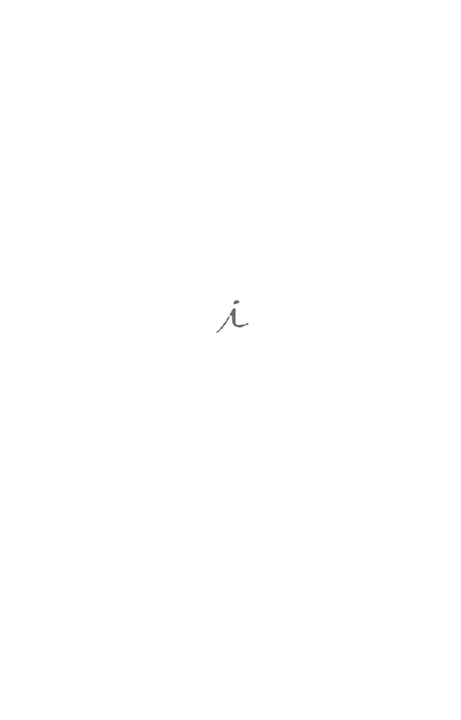

飞行家
双雪涛 著
广西师范大学出版社
•桂林•
图书在版编目（CIP）数据
飞行家 / 双雪涛著. —桂林 ： 广西师范大学出版社， 2017.7
ISBN 978-7-5495-9934-9
Ⅰ. ①飞… Ⅱ. ①双… Ⅲ. ①中篇小说－小说集－中国－当代 ②短篇小说－小说集－中国－当代 Ⅳ.①I247.7
中国版本图书馆CIP数据核字（2017）第166564号
广西师范大学出版社出版发行
桂林市中华路22号 邮政编码：541001
网址：www.bbtpress.com
出 版 人：张艺兵
责任编辑：罗丹妮 刘婧
封面设计：陆智昌
内文制作：龚碧函 陈基胜
献给K
序
这是一本小说集，近年写的，具体点说，就是最近两年写的，最新的一篇写于2017年年初。中短篇小说我不知道还有谁在看，2016年出过一本集子，那是第一本，出完之后发现确实有人在看小说集，而且看得很认真，我很受鼓舞，就闷头又写下去了。实话说，不是被别的什么鼓励，而是感觉到，这个世界如果有人在看小说集，就说明这个世界还没有糟糕到难以收拾的地步，当然不一定非得看我的，看谁的都行。我被这件小事鼓舞了一下，这是我的幼稚，可能也是我为了拯救自己找的借口。
人的心里头有很多难以忘记，又不易想起的事情，比如我的大姑，我很少想起她，因为写小说，我想起了她，她已经老了，七十岁，而在我小时候，她曾经远道而来，就为了看看我，给我买一支冰激凌。我想起了她的好多细节，为她的衰老而热泪盈眶，好像我一直惦记着她。小说写完之后，我又把她忘记了，并没有给她打去一个电话。我喜欢写小说，可能这是一种省力的怀念，让所有人成为我的虚构，而我非常胆怯出现在他们面前，因为那会使所有意念中的精神塔楼都变成一件真实的黑色围裙，同时伴随着责任，世故和磨损，不太适合一个懦夫。
人越来越成为孤岛，虽然假以时日你甚至可以加上死亡的微信，它可以给你点赞和留言，但是大部分人应该并不想见到它，也不了解它的内心。孤岛需要自给自足，你好，请给我送一个白色的女朋友来，想来这也不是十分遥远的事情。也许正因为如此，我用自己笨拙的大脑创造一点点东西，印成一个方方正正的实体，遥远的某个人，关上门倚在床上，拿起她，用他（她）的灵魂去识读，是我能够对抗这孤独的唯一方式。重要的并不是谁创造了这个东西，重要的是你摸到了她，闻到了她，认出了她，然后认出了自己，原来你也在这里啊，哪怕只有一瞬，我也感到满足。
这里大概有九篇小说，往小了说，是我自己摸索着做的几件活计，往大了说，是我寄出的几封书信。我不但写了，还认真折了几折，我已经三十几岁，没能学会几件事情，这可能是一件，就是在写信的时候小心翼翼一点。感谢每一个拆开她们的人。感谢每一个一直对我说真话的朋友，没有你们，我会堕落，这万无一失，谢谢你们。
双雪涛
2017/5/12写
2017/6/7定
跷跷板
刘一朵指着床尾的摇柄对我说，摇六下，是仰卧，能喝水。摇十二下，能坐直，他坐不直，往下出溜，你给他垫个枕头。我说，你铺垫了吗？她说，你自己跟他说一下。我说，还是应该铺垫一下。她说，他现在疼得一会明白，一会糊涂，你自己铺垫。
刘一朵比我高，大概高十五公分，主要是高在腿上，上半身我和她差不多，脖子我比她还长一点，主要是腿，腿长，胳膊也长。所以据我目测，我一下摇不了她那么瓷实，可能得七下，十三下。这是一间单人病房，窗帘和沙发是蓝的，上午的太阳一照，好像在透视。茶几上摆着几个橘子和一只细口花瓶，花瓶里没有花，暖气太热，一般花都死，刘一朵买了一盆仙人掌，放在花瓶旁边，像是一个自卑的胖子。夜里守夜的是刘一朵她妈，我叫阿姨，为了显得亲切，我不说你妈，一般都说我姨。此时我姨已经回去，睡在她家那张巨大的床上。床有四柱，上有木顶，极像轿子，床体极大，两米乘两米五，放于主卧。白天是刘一朵的班，她请了四个月假，遵医嘱，四个月差不多，顶多五个月，我叔也该走了。晚上有时我住在刘家，家的面积有点大，楼下一层，楼上一层，还有个天台。刘一朵说自己住，放个屁都有回音。我们几乎每晚做爱，就在她父母的那张大床上，乐此不疲。
这天是刘一朵的单位要年终考核，她非得回去做个陈述，要不上半年干的活就有点吃亏，如能评个先进，奖金也多了几千块，钱是小事儿，主要是一张脸。她在一家银行上班，事儿倒不多，每周还有瑜伽，攀岩，远足，活动不少。行里头有食堂，澡堂，乒乓球案子，台球桌，中央空调。只是沉闷，不太适合她的性格。相亲时听说她是银行职员，心里有点抵触，一是怕悬殊，二是怕无聊，见面之后发现大出我意料，说话像连珠炮，还能喝酒，喝完还酒驾。她把我送到楼下说，总结总结。我说，总结啥？她说，总结总结今天。我说，我是个工人，一辈子挣不了你这么一辆车。她说，你庸俗。我说，介绍人不靠谱，差距太大，我不是庸俗，我父母都是工人，我爸说过一句话，人穷志短，马瘦毛长，以前不知道啥意思，今天坐在车里，知道了。她说，我爸过去也是工人，做手扶拖拉机。我扭头看她说，是吗？她说，什么是吗？我小时候还开过，三个档位，柴油的，一开直颠，跟骑马一样。我说，什么厂子？她说，小型拖拉机厂，后来改叫金牛机械厂，后来黄了。我说，我知道，在新华街上，现在厂房还在，好大一片，据说是工人不让拆，自己凑钱雇人，在那看着。她说，就你知道。我爸原来是厂长，那人还是我爸找的。我就在那的幼儿园长大的，幼儿园院子很小，没啥玩具，只有一个转椅，不知是哪个工人车的，喷成好几个颜色，转起来极快。我就爱坐那个，有一次掉下来，头顶磕了口子，现在还有疤。你摸摸。我伸手摸了摸，不太好摸，摸了半天，果然有，在头发中间，有一个肉的凸起。她说，头发都让你摸乱了。她摘下皮套，把头发披在肩上，皮套套在手腕，手腕纤细，腕骨清晰，成掎角之势，如同瓷器。她照着后视镜，把头发重新扎起来。我说，我开吊车。她说，你吃饭的时候说了。我说，三十几米高，上面就我自己，没人跟我说话，冬冷夏热，但是我爱开。她说，喜欢受罪？我说，安静。还能俯视别人，都比我小，我一个不注意，就能砸死俩。她说，当自己是上帝了是吗？我说，就是有时候高，待在高处，感觉特别。她说，你一个月挣多钱？我说，三千七，五险一金，如果我从吊车上掉下来摔死了，能赔二十万。她说，比我想象得多。我说，我开得好，你把瓶起子绑钩上，我能给你开啤酒。她说，我从那个转椅摔下来之后，我爸打个电话，把那个转椅拔了，换成了跷跷板。我说，嗯。她说，我没坐过跷跷板，我讨厌让人撅起来。嗯，长大了想法有点变化。我说，我妈那个厂子有个秋千，我……她说，你家有人吗？我说，有，我爸妈都在，估计在看电视。她说，下车吧。我拉开车门走下去，冷风一吹，顿觉刚才话多了，牛逼吹得也有点大。她摇下车窗说，明天你给介绍人拿条烟。说完把车开走了。
我叔在睡着。他不知道刘一朵今天要去单位，我当班。他过去见过我，在他家楼下，我站在那等刘一朵去看电影，这是我和刘一朵共同的爱好。确定关系之后，我想送个信物，既特别又不腐坏，如果有一天分手，让她还能记得我。我让厂里的车工给她车了一个铁花，铁玫瑰，那哥们问我，用喷点红漆不？我说，不用，就这铁色儿。他看着锋利的花瓣，说，这玩意过不了安检。我说，你他妈操心的还挺多，我骑车送去。刘一朵拿在手里看了看，说，看过《第五区》？我说，是，你就不能假装不知道？她说，走，看电影去。我和刘一朵看电影就是看电影，不吃爆米花，也不接吻，就是坐着看，看完吃饭。那天我等刘一朵下楼，先看见刘一朵，然后看见我叔，刘一朵看见我使了个眼色，我刚想溜，我叔说，找你的？刘说，是，我单位司机，一会我要出差。我叔微胖，穿着皮夹克，没拉拉划儿，肚子略显立体，腿短，也比刘一朵矮半头，可是腰板笔直，手里拿着翻盖手机，看上去能接通不少人。他走过来同我握了握手，说，那你辛苦。我说，没事儿，没事儿。他说，那我先走，路面有雪，慢点开。我说，您放心。老司机了。他朝我们摆摆手，朝另一个方向走去。那时他并没生病，或者说已经有了病灶但并不知晓。他三十几岁就戒了烟，很少喝酒，每周打羽毛球，理应对身体充满信心。
我叔动了动，应该说是蠕动了一下，手指的监控夹松了，我帮他紧上。监控器上的指标刘一朵教我看了一遍，心率正常，主要是注意血压，最近肿瘤顶破了十二指肠，有点便血。屁股底下垫了尿不湿，头顶上挂着一只血袋，这边拉，这边灌，有点像小时候的数学题。他的肿瘤原发于胰腺，这事情比较难办，癌喜欢开拓，胰腺又是枢纽，癌细胞从胰腺开始向上，攻陷了肺和淋巴，正在迫近南京，人类的大脑。最初的症状开始于几个月前，是丝丝拉拉的疼痛感，他跟我姨说，最近不知咋了，老爱岔气，肋叉子疼。岔气并不是疑难杂症，喝点热水放几个屁便好，可是人开始消瘦，肚子瘪了，腮帮子也像是秋天的山岭一样清癯起来。有几次岔气岔了一夜，没有屁，只是疼。我叔是条硬汉，听刘一朵说，年轻时有次在厂里让铲车撞出五米远，腰已不会动，还紧急给几个班长开了一个会，谈了一下安全生产的问题，到医院时，大夫说错位的厉害，人都快两截了，怎么还能自己走来？可是那一夜岔气，他疼得想给肋叉子一刀，我姨觉出不对，送到医院就没让走，直接住进了单人病房。晚了，手术已无意义。可是他自己并不知道，这个保密工作做的之好，全赖刘一朵的缜密，每一个来探视的人，她都要走一遍戏，对一下台词。我叔知道得了癌，但是很轻微，手术都不用做，化疗一下就能回家。刘一朵跟他说，咱家到医院有两站地，大夫说，做完两个疗程，你能自己走回去。那时我叔双腿已瘦得如同秸秆，他说，我想骑自行车，我挺长时间没骑自行车了，想骑自行车。刘一朵说，那就说定，等你好了，你骑自行车驮我回去。刘一朵跟我讲这个故事的时候没穿衣服，身上有细汗，她说小时候都是我叔驮她上学，后来下海经商，再没驮过她。
我叔又动了，哼了一声。我赶忙站起来，听他说啥。他的脸皮脱落了大半，颜色深浅不一，如同得了癣。我对刘一朵的行径深不以为然，我觉得应该把真实情况告诉我叔，万一他想周游世界啥的，你这么欺瞒，也许会留下遗憾。可是刘一朵说在她小时候，我叔老骗他周末会回家，可是老不回来，但是她还是每次都信，她觉得我叔骗她是对的，让她有个念想。后来我便不与她争论，毕竟是人家的家事。
他睁开眼睛看了看我，说，护工？我说，不是，我是一朵的朋友，今天她单位脱不了身，我照顾您。他看了我半天，说，司机？我说，您还记得我。他说，你瘦了。我想了想说，最近晚上睡不好，老起夜。他说，年轻人要注意身体，要不老了全找回来。我说，您说的是。他说，你把我摇起来点，我喝口水。我走到床尾，摇了七下，看他要歪，又跑过去给他垫了个枕头。保温瓶里的水足够，我递给他，他说，抽屉里有吸管，我得用吸管。我找出吸管放在水瓶里，他喝了一点递给我。他的嘴唇都枯了，好像树皮，水喝了一点，有一半都渗进了嘴唇里。他说，有点不太好意思，上次你见我时，我还有头发。我说，您没头发看着挺精神，也省事儿。他说，是，不用洗，拿抹布一擦就干净了。我乐了，他没乐，他知道他说了个笑话，可是不乐，双手交叉放在腿上，虽是瘦得像纸皮一样，可是还是有种威严。他说，一朵有点脾气，你多担待，她有啥说啥，这点倒是好，比闷声让你猜强。我有点不知该说啥，也许他第一次见我就已经识破了。他说，你做什么工作？我说，您英明，我不是司机，我开吊车，在铁西的钢厂。他说，我知道，第三轧钢厂，我回城分配还考虑过那。现在效益怎么样？我说，还行，光吃饭够用，现在厂子少，活着的都能勉强坚持。他说，受累，我得上趟厕所，自从得了病，喝点水就上厕所，肠子跟直筒一样。我说，你要是嫌费事，就尿尿不湿上吧，我不嫌费事，就是怕您累着。他说，有时候控制不了，就那么着了，这自己都知道了，尿被窝里还是有点不习惯，你架我一下。厕所离床大概十米，我们大概走了五分钟，我一手提着他的吊瓶架，一手支着他的腋窝，我感觉他在浑身用力，可是效果并不明显，好像这副骨架并不听他摆弄。而且我感觉到他疼，说不清是哪，但是肯定有地方在疼痛，他站在坐便前面尿了一会，尿了几滴，然后我们原路返回，他开始出汗了，双腿也开始发抖，在他坐在床沿的时候，我一手扶着他，一手给他换了个干净的尿不湿，他躺下时，准确地说，有点像把自己摔在床上，然后歇了半晌。我觉得这么老盯着他不太礼貌，就站起来走了走，摆动摆动茶几上的报纸，给仙人掌浇了点水。他在我身后说，你叫什么？我说，我叫李默。他说，小李，我最近忘了不少事情。我回过头，看他正在看架子上的血袋，还有半袋子血，鲜红黏稠，不知是谁的。我说，您别费劲想，说不定什么时候就想起来了。他说，可能是化疗的副作用，记性变差了，我上午一直在想当年我车间的那个看门人，怎么也想不起来他叫什么。我说，看门人？那很正常。他说，那个看门人是跟我一起下乡的知青，算上下乡，算上回城，在一起待了十几年，可我想不起来他叫啥了。我说，我也经常想不起初中同学的名字，有次在红旗广场碰着一个，说啥想不起来，就记得她有个绰号，叫八戒。他说，八戒？我说，是叫八戒，刚开始还挺不乐意，后来老自称老猪。他说，我想起来了，那个人绰号叫干瞪。因为眼珠有点突出，一半在外面，又看门，所以叫干瞪。我说，这外号，形象。他说，想起来了，他大名叫甘沛元，父亲是粮食局工会主席，母亲在百货商店，他姐是变压器厂的电工。我说，您看，这不全想起了。他说，我有次发现他偷车间里的零件，就说了他两句，晚上他把我们家窗户全砸了。我说，后来呢？他说，我累了。我眯一会。我帮他把床摇下来，瞥了一眼心率，略有点快，平躺之后好了一些。他说，小李，你把窗台那只鸟放出去吧。我说，鸟？他说，窗台有只鸟，在那半天了，飞不出去，你给它放出去吧。窗台空无一物，窗帘堆在一侧，今天天气很好，虽冷，午后阳光还有，照在窗台上，好像一层黄色的细沙。窗外是停车场，一只鸟也没有，大小车辆停在白线里，几个人在车旁边握手。再看他已经睡了。
我坐在椅子上，也在发困，很想出去抽支烟，又怕他的滴流断了没人知道。早上我陪刘一朵过来，先在走廊抽了支烟，一个中年女人自己举着滴流瓶子，在那吸烟，她的肿瘤在肝脏，她告诉我是喝酒喝的，医生不让喝酒，赶忙学会了抽烟，儿子在外地，她没敢告诉他自己得病，正是晋升的关键时刻。她戴着绒线帽子，努力跟每一个陌生人交谈。我捏了捏脸颊，掀起被子看了看，没有排便，也没有出汗。血袋要没了，我按了按铃，没人来，只好自己走到医生办公室。一个大夫正在电脑上下处方，我说，502三床的血袋没了。他回头看我说，刘庆革？我说，是。他打了个电话给护士站，让他们去换血袋，然后从抽屉里拿出一张CT图说，这是昨天照的脑部CT，不太乐观，你看这片阴影，边缘不规则。我说，他刚才跟我说，在窗台看着一只鸟，可是窗台没有鸟。他说，肿瘤已经到了脑部，症状因人而异，有的是疼，有的是健忘，有的是幻觉，也有的是都有，你明白吧。我说，明白。他说，你爸这状况，坚持不了多久，也许会昏迷，如果不昏迷，可能会非常痛苦，要有心理准备。已经坚持这么久，实属不易，你爸的求生欲望很强。我说，他不是我爸，我是他女儿的朋友。他说，哦，我是值班大夫，对家属不太熟，等他家人来，让他们来一趟。止疼药这么打下去，跟毒品差不多，有钱也不是这么花的。我说，知道了。
晚上刘一朵来了，我跟她说了一下，过了一会我姨来了，他们俩一起去了医生那，谈了半天。我叔醒了，看我在，说，你开几吨的吊车？我说，二十二吨半。他从被里面伸出手与我握了握说，我有事先走，雪天路滑，慢点开。然后又闭眼睡了。
刘一朵并没有告诉我谈话的结果，只是跟我说，她租了个床，这几天晚上也在这儿，让我先回家。我知道也许有了新情况，可是也没必要多问。除我之外，刘一朵有几个暧昧的对象，我是知道的。有天我在她微信里看到，一个人跟她说，二垒时间太长，想三垒。我也没问，这在我意料之中，只是下班之后推说有事，跟几个同事去洗了个澡。我总不能和她结合，虽说床上和谐，可是在某种层面上，友谊大于爱情。同事里有跟我要好的，女的，我也没事过去她工位看看。她是个钳工，比我矮一点，年年先进，就住在我家对面，鞍山人，我和她每天在一起吃饭，她能做极好的炸黄花鱼，每周末都做几条，分我半数。我喜欢吃鱼，如果老婆能烧一手好鱼，可能这一辈子就能坚持下来。但是我还是有点踌躇，刘一朵现在家里摊上了事儿，很多问题需要这件事情过去之后再谈。
两天过去，刘一朵都没跟我联系，有几次我拿起手机，又放下，在这个关系里，还是让她主事比较好，其实我想问问我叔咋样了？可是这句话像客套，容易让她觉得我是在关心她，可是其实真的就是字面意思。她能把自己照顾得很好，这点我深信不疑。第二天晚上，我和钳工去看了一场电影，她睡着了，电影有点科幻，有点闹，3D眼镜让人头晕。故事发生在未来，很老套，大概是从未来回到过去，为了更改现在，可是现在正在发生，我总怀疑已经被更改过多次，那又如何，不还是现在？结束之后我叫醒她，把她送到楼下，没有上楼，但是我们第一次接吻了，感觉很好，她的嘴唇结实，双手紧紧抓住我的衣肘，洗衣粉和我用的是一个牌子。回到家我爸正在用我的电脑下棋，他和我妈都已经退休两年，其实退休之前的二十年已经下岗，做过不少小买卖，在街边流窜，被驱赶，与城管厮打，争夺一口苞米锅，终于到了两年前，可以安心养老。我妈此时应该正在马路上和一群同龄人暴走，一路从和平区走到铁西区，可是效果并不明显，眼看胖了起来。我爸学会了用电脑下棋，还学会了下载作弊器，预感要输，退出了也不减少积分。等到开春，他就会回到路边摊，那并不只是下棋，还有许多话可以跟棋友说，有时候心理战比棋艺更重要。两人过去是战友，如今各玩各的，倒疏远起来，峥嵘岁月恍若隔世，闲时总是争吵。我洗了个澡，躺在床上玩手机，发现刘一朵在半小时前给我打了十几个电话，我在电影院静音，没有发觉。我打回去，刘一朵说，你死了？我说，没，睡着了，没听见电话。她说，我爸闹了一夜，非得要见你，非得要你陪护。我说，我何德何能？她说，你他妈还端起来，来不来？我说，我打个车，也许我到了他就睡了。她说，我等你。
我到了之后发现门口围了一群人，年龄都和我姨相仿，应该是我叔那头的亲属。我姨说一句话就哭一声，几个女眷也在抹眼泪。主治医生站在门口，正和他们小声商谈。医生说，你是小李？我说，我是。他说，谁也不让近前，就让你进去。也不知是哪来的劲儿，刚才把枕头扔我脸上了。我说，你脸没事儿吧？我进去看看，等他睡了喊你们。刘一朵罔顾医院的规定，正在抽烟，她推了我一把说，你为什么不接电话？我说，真没听见，我打电话有时候你也没接。大夫说，都别着急，今晚应该没事儿，家属该休息休息，我今晚值班，放心。隔壁一个家属推开门探出头来，说，你们还有完没完，就你们家有病人？已是夜里十二点多，护士站就剩一个护士，眼皮发沉，正在用ipad看美剧。刘一朵走近我，把我抱住，说，想你了，等他睡了，你让我进去。我拍了拍她的后背，然后推门走了进去。
我叔坐得挺直，正在用手够桌上的橘子，我把橘子递给他。他把橘子扒开说，给你吃。我说，我刚吃过饭，吃不下。他把橘子皮放回桌子上说，不吃也行，橘子这味也挺好闻。我在床边的椅子上坐下，说，叔，你困了就睡会。他说，我不困，想跟你聊会天，你困吗？我说，我睡得晚。他比我想象得平静，枕头在他身后，没有要飞出来的征兆，床边的吊瓶架上没有血袋，已经换成葡萄糖。他说，我跟你聊的事情，你不要跟一朵说，不要跟任何人说，永远别说，能答应我吗？我说，我就见过您一面，我答应了您也不一定相信。他说，我力气有限，没用的话不要讲，我知道你，你也知道我，跟别人聊不上。我说，好，如果您看得起我，您就说，我不说出去。他的样子没怎么变，只是眼睛比过去大了，通红，好像内心被什么催动，眼仁儿烧得如同火炭。他说，我有个军大衣，过去厂子发的，跟一朵说了，给你穿，吊车上冷，现在这些新东西都不如军大衣暖和。我说，谢谢您，就缺这么一个东西。他说，等我好了，你再还给我。我说，好，等您好了，我给您洗干净拿回来。他说，在柜子里，你自己拿。我怀疑是他的幻觉，如果没有会很尴尬，可是他在盯着我看，我不打开柜子恐怕是不行。柜子里果然有一件军大衣，洗得有点旧，不过一点没坏，我拿起穿上，大小正好，又暖和又敦实。他说，你转过身来我看看。我转过身去，他说，你很像我年轻的时候。我说，您抬举我。他说，我有个儿子，自从我病了，从来没来看过我。我心想，这倒是情理之中，钱这么宽裕，有个把私生子不足为奇，原来这就是他要跟我说的秘密。我说，您儿子在哪工作？他说，在银行，我给办进去的。我听着有点奇怪，说，叫什么？他说，叫刘一朵，姓刘的刘，一二三四的一，花朵的朵。我知道他是想窜了，说，现在年轻人都忙，等您好了好好批评他。他说，桌上有个止疼贴，你给我贴一下。止疼贴上没有中国字儿，但是上次架他去上厕所，看见他大腿上有一个，所以大概应该是贴到动脉上。我刚想掀被，他指了指太阳穴，说，贴这儿。我说，恐怕效果不好。他说，我头疼得不行，但是想把话说完，你给我贴上。止疼贴是个圆片儿，贴上之后搞得我叔有点滑稽，像是天桥上的瘪三。
他说，上次跟你说到甘沛元，这两天我又想起点事情。我说，您说。他说，1995年厂子不行了，我拉了一伙人自己干，但是肯定不能全叫着，养活不了那么些，就得先让一批人下岗。甘沛元是我发小，一起长大，我养了他这么多年，也算够意思了，就找他谈了一下，让他买断，钱比别人多五千，这钱我自己掏。他不答应，四处告我，威胁我要杀我全家。告我没用，那是大政策，不是我发明的，但是我发现他跟着一朵，那时一朵上初一，并不知道有人跟她，有一天我把他叫住，他从皮包里拿出一瓶硫酸，在我面前晃了晃，然后走了。我说，您歇会。他的心率增加，已经到了一百六。他说，我一口气说完，害怕忘了。我想找人把他做了，可是想来想去，还得自己来。快过年了，厂子已经放假，我约他在车间办公室见面，给他拿点年货，谈一下把他招过来的事儿。我用扳子把他敲倒了，然后又拿尼龙绳勒了他的脖子。他一个人过，爱喝酒，孩子跟前妻，父母也早不理他，他不是管他们要钱，就是从家里偷东西。我确定他死了，眼睛比过去还突出，舌头也咬折了，我就把他拖到厂子尽里头的幼儿园，用铁锹挖了个坑，把他埋了。就在院子里跷跷板的底下。说完，我叔闭上了眼睛，满脸都是汗，枕头湿了一片。我说，您喝点水吗？他摇了摇头。我想走，但是他好像没睡，这时候出去，恐怕会让他觉得我有点懦弱。他闭着眼睛说，我这两天做梦老梦见他，说我的行为他理解，可是能不能给他迁个地方，立块碑，没名字也行，这么多年老被孩子们在上面踩来踩去，有点不好受。我说，您放心，我给您办吧。他点点头说，动静要小，那厂子我找人看着呢，这么多年我花了不少钱，等我好了，我去给他烧纸，你是司机，你开车带我去。以后你就给我开车吧。我说，好，老司机了。
他终于睡熟了，呼吸极其轻微，我掀开被，看见尿不湿上一大片黑血，帮他换了，他也没醒。我盯着他看了一会，他的胸口在起伏，有时候突然吸进一大口气，好像要吞掉这个病房的空气一样，然后慢慢地，游丝一般地呼出来。我推开门，发现人都已经散了，只有刘一朵靠在走廊的墙上，闭目沉思。她睁开眼说，睡了？我说，睡了。她说，我妈去买寿衣了，免得到时候抓瞎。我说，一点希望没有了吗？她说，他的身体里已经快没有血了，你明白吗？没有血了。她拉着我的手，走进病房，洗手间摆着她的护肤品和牙具。她洗漱完毕，脱光自己，抱着我钻进病房一角的行军床，军大衣我盖在暖气上，房间里实在太热，能遮一点是一点。我们抱了一会，谁也没有说话，我能听见我叔的呼吸声，或者说我小心翼翼地听着他的呼吸声，监控器时不时发出一点微小的声响，那是血压在缓慢地掉下来。她在我下巴底下说，到我上面来。我说，睡吧，叔能听见。她没有答言，伸手脱掉我的内裤。我翻起身压住她，她的眼睛里都是泪水，我抱着她，一动不动，她的眼泪蹭了我一脸，过了一会，她推了推我的肩膀，翻身冲外，没有了动静。
我醒来的时候，已经是夜里两点，口干舌燥。刘一朵睡着了，身体蜷成一团。我穿上衣服走到我叔的床边，在他的保温瓶里喝了点水，水尚温，我叔微张着嘴，一动不动，裹在白色的寝具里，我趴在他耳边叫他，叔？叔？他没有反应。我等到他又吸上一口气，披上军大衣，离开了医院。
出租车司机开得飞快，冬天的深夜，路上几乎没有人，路边时有呕吐物，已经冻成硬坨儿。树木都秃了，像是铁做的。他认识小型拖拉机厂，说没人不认识，那曾经是效益最好的大工厂，现在没拆，一直烂在那里，地皮的权属不清。我站在大门口，发现厂子比我想象得还要大，如同巨兽一般盘踞于此，大门有五六米高，只是没有牌子，也没有灯。我从大门上面爬过去，跨过锋利的铁尖，刚一落地，门房的灯亮了。一个人拉开窗户探出头来，此人也许五十岁，也许六十，头发没白，可是脸上都是皱纹，下巴上全是胡子楂子，瞪着一双突出的大眼，看着我。手里拿着一只甩棍。他说，爬回去。我看着他的眼珠，一半在里头，一半在外头，好像随时能掉在地上。我说，甘沛元？他说，你谁啊？我说，干瞪？他说，哥们，你认识我？进来坐坐。他的屋子很小，从窗户里望，有一个煤炉子和一个小电视，煤炉上搁着水壶，墙上都结了冰。我呼出一口气说，我是刘庆革的司机。他说，你是庆革厂长的司机？他现在怎么样，每个月往我卡里打钱，好久没见过他了。我说，他挺好，老提起你，就是忙。我进去走一圈，一会回来我们聊聊。信得过吗？他说，大半夜的，就是走一圈？我说，就是走一圈，然后回来跟你喝点酒。他说，成，我把酒温上等你。
厂区的中央是一条宽阔的大道，两边是厂房，厂房都是铁门，有的锁了，有的锁已经坏了，风一吹嘎吱吱直响。有的已经空空如也，玻璃全都碎掉，有的还有生锈的生产线，工具箱倒在地上，我扶起来一个，发现里面有1996年的报纸。我顺着大路往里走，车间的墙上刷着字，大都斑驳，但是能认出大概，一车间是装配车间，二车间是维修车间，三车间是喷漆车间，一直到九车间，是检测车间。路的左侧，跟车间正对，有卫生所和工人之家，卫生所的地上还有滴流瓶子，上面写着青霉素，工人之家有个舞台，座椅烂了大半，东倒西歪。我走到路的尽头，右面挂着一个牌子，上面写着：子弟幼儿园。走进去，看见一栋二层小楼，楼门紧锁。楼前的土地上，有一个跷跷板。我在跷跷板上坐了一会，虽然锈了，可是还能翘动，只是对面没有人，只能当椅子。坐了大概五分钟，我回到二车间，找到一根弯曲的铁条，回到跷跷板开始挖。土已经冻了，非常难对付，累得我满头大汗，大概挖了一个钟头，已经有了一个半米的小坑，什么也没有。我歇了一会，抽了支烟，发现汗要凉，赶紧继续挖。又挖了半米，看见一串骨头，应该是脚趾，我顺着脚趾往宽了挖，很小心，怕把骨头碰坏了。又花了大概四十分钟，看见了一副骸骨，平躺在坑里，不知此人生前多高，但是骨头是不大，也许人的骸骨都比真人要小。他的骨头里面杂着几块破布，是工作服。我盯着骨架看了一会，想了想城市周围的墓地，也许东头的那个棋盘山墓园不错，我给我爷扫墓去过，如果能订到南山的位置，居高临下，能够俯瞰半个城。
墓碑上该刻什么，一时想不出，名字也许没有，话总该写上几句。我裹着军大衣蹲在坑边想着，冷风吹动我嘴前的火光，也许我应该去门房的小屋里喝点酒暖暖，人生有时候就是这样，痛快地喝点酒，让筋骨舒缓，然后一切就都清晰起来了。
光明堂
一
疯子廖澄湖曾经画过一张艳粉街的地图，并且标明了大部分建筑的来历，地图是用钢笔所画，一丝不苟，远看像一片蓝海。廖比我大三十岁，在艳粉街扫厕所，但是是我的好朋友，几十年前国家内乱，他是雕塑系的学生，大概是在学校不太听摆弄，给下放到了艳粉街。据别人讲，到了艳粉街他也不老实，弄了一个什么反动泥塑，结果被红卫兵逮住，剁掉两手的中指，再也捏不了泥巴，这便是疯病的由来。廖澄湖的疯病在我们友谊持续的时间里（这段友谊大概持续了一年）发作过两次，一次是冬天，一次是秋天。冬天那次他走到街对面修自行车的老董头那，一个路过的男人正从老董头的炉子里拿出一根柴火，去烤已经冻住的气门芯儿。廖澄湖双手袖在黑棉袄里，站在那看。老董头已瞄了他半天，廖澄湖对男人说，朋友，手伸出来看看。男人不知所谓，把手伸出来，廖澄湖说，哈，果然多了一根。从袖子里抽出菜刀砍去，老董头一脚把他踹倒，刀夺走。操你妈的，下次再到跟前来，鸡巴给你噶了。说完把菜刀扔进自己的工具箱里。1992年秋天，我十二岁，廖澄湖四十二岁，一起去艳粉街中心的影子湖边给他的朋友烧纸，他的疯病第二次发作，想要抓住我，结果掉进湖里淹死了。这个故事没啥意思，不讲了，这里要讲的是，他留给我一张艳粉街的地图，不但记录了艳粉地区的大部分道路，山岭，湖泊，还记录了几乎艳粉街所有的建筑。
父亲有姊妹三个，他是老二。大姐嫁到锦州，是个护士，有时通信，我识字之后，父亲就让我代他写信，他口述，落款都是我们家三人。她经常在信里邀请我们去锦州过年，可是我们从来没去过，据我自己揣测，一是大姑还不知道母亲已经离开父亲，跟同事去南方做生意，再未露面，二是因为没有合适的衣服。有时大姑寄来些钱，父亲也都原封不动退回，信里只写些琐事，大都慎重挑选。父亲失业之后酒喝得勤，信也不怎么看了，不过我已熟知他的口吻，可以像模像样地回信。父亲从来没提过老姑，但是我知道我有个老姑，大姑曾在信里提过，并且叮嘱父亲和老姑恢复联系，因为她收到消息，老姑也搬到了艳粉街。父亲似乎并未注意此事，自己家的老幺搬到了离自己很近的地方，或者再动脑筋想一下为什么老姑也会落魄如此。他先是卖掉了自己过去亲手打的炕柜，然后又把黑白电视机搬到了后街的杨三儿家，卖了三十块钱。学费在学期初已经交过，倒还能支撑几个月，但是冬天来了，父亲并没有买煤，这让我有点惶恐。这是母亲走后的第二个冬天，第一个冬天时，父亲还能勉强把煤坯打好，堆在后院的小房里，但是煤打得很差，掺进了不少黄泥，经常在灶膛里蹿出浓烟。第二个冬天已经初露端倪，路口大杨树的树叶掉光了，修车的老董又在摊子旁点起了炉子。夜晚待在家里，是极难熬的时光，窗户的缝隙里已经有了霜迹，炕是凉的，父亲穿着棉裤和棉鞋，歪在炕上喝酒，方桌上只有一只白梨，他小心地用小刀剜着，然后把刀横在嘴边，卷进梨去。
第一场雪来了，是一个傍晚时分，不是很大，但是很黏，雪片不易分辨，如同粉末。我放假了，第二天不用去上学，炕上铺的地板革像铁片一样凉，父亲的双腿伸在桌子底下，沉沉睡着，屋子都是酒味儿，装酒的塑料桶就放在他身旁。天彻底黑下来，我拧开塑料桶盖，倒进父亲的玻璃杯，喝了一小口，辛辣无比，脑仁发胀，不过好像确实暖和了一点。父亲坐了起来，说，我做梦有人偷我酒喝。我说，不好喝。他蜷起脚，给我腾了点地方，慢点喝，先用舌头压住，暖一暖，然后咽了。我又喝了一口，比第一口还要难喝，五脏六腑好像挨了一拳。父亲从兜里掏出了几颗花生米，喂进我嘴里。你知道艳粉街是个啥形状？他说。我说，圆的。他说，对，从上面看像盘蚊香，一圈一圈的。他把身上披的工作服拽了拽，盖住脖子，手指沾了点酒，在桌子上画了一个圈，我们家在东边，上北下南左西右东，你的学校在南面，每天上学走这条路，路过公共厕所，红星台球厅，春风歌舞厅，是吧。我的厂子在北面，挨着影子湖，现在黄了，不知道成了啥样。我说，听说还在产拖拉机，杨三儿就让找了回去。他说，嗯，应该是厂长自己的了，不需要工程师。你按照上学的路线走，走过学校，走过孙育新诊所，走过影子湖，再走过煤电四营，再走过一条火车道，就到了艳粉西街。那有一个小教堂，你老姑在那，她叫张雅风。我说，你怎么知道？他说，我走过一次，大概需要一整天，这个冬天你去老姑家过吧，开春再回来。我说，我不去，我不认识老姑。他说，她认识你，你出生的时候她来看过你，你俩见过面。去的时候带着你大姑写给我的信，她一看就知道你是我儿子。我说，我不去。他说，我找了一个工作，在新民，吃住都管，带不了你。我说，爸，你又能当工程师了？他说，打更的，开春我就回来，明儿一早雪停了我们分头走，睡吧。
第二天早晨，我醒来时已经快中午，嘴里还有酒味，头有些沉。父亲不见了，我身上盖着棉被，父亲的军大衣叠在旁边，上面放着我的绒帽和手套。桌上有两个豆沙包，屉布盖着。我坐起来看看窗外，雪已经停了，白得耀眼，一串脚印向东延伸而去，从我家往东走有一个长途汽车站。路对面的老董头戴着皮顶子，正用铁锹挖着房门前的雪，他的哑巴儿子大老肥把雪往远处踢着。我把豆沙包吃了，屉布冲了冲，搭在灶台，然后翻出大姑的信和廖澄湖留给我的地图。我把地图摊在桌上，用食指循着父亲指的路线，我的学校旁边用蝇头小字标着：艳粉小学，翻建于五十年代，艳粉屯小学堂旧址。煤电四营旁边标着：为何叫四营，不知，未听过一二三营。沿着煤电四营往西，很远的地方，几乎到了地图的边缘，有一个小建筑，写着：光明堂，旁边标注：主体木制，二层，建于二十年代，“文革”时我的批斗会就在这里，拜老高所赐，留下两根手指。
光明堂这个建筑说是二层，他却画得极高大，看上去有十层，且在旁边字的结尾处，画了一个小像，方脸大眼，看上去是个女孩儿，不知是什么意思。
我把信和地图，还有假期要写的作业放进书包，为了防备白天走不到，我还装了一个手电筒，然后穿上军大衣戴上帽子手套，锁好门，向西走去。雪没脚踝，乌云已散，阳光大好，路两旁矮房的房顶，都是平整的雪，看着憨厚可爱。公共厕所前面排着队，有人手里拿着痰盂，有人捂着双耳，嘴里叼着烟卷。我的学校大门紧锁，看门的老人正用扫把扫雪，他扫得很慢，好像也在晒太阳。老孙站在诊所门口做操，手指衔着脚尖，从窗户能看到诊所里两张按摩椅，其中一张上躺着他的儿子孙天博，在睡觉。又走了好久，看见了影子湖，洁白无际，平整如刀，从旁边绕过，之后的路就完全是陌生的，从没来过。我第一次知道艳粉街的面积这么大，影子湖以西，是一条漫长的土路。我便沿着路走，感觉到汗从身体里渗出来，似乎永远走不到尽头。两边时而出现旧的矿坑，时而出现小丘，完全另一派天地。太阳要落下去了，我的双脚都湿了，棉鞋好像沉了两斤。面前出现一片大杨树，树枝上都挂着雪，风一吹摇摇欲坠。从杨树林穿过，看见了火车道，火车道已经被雪覆盖，不过路基高出一块，尚可辨认。我登上路基，面前一片坦阔的空地，两个小女孩儿正在堆雪人，看上去都比我小三四岁。我问，光明堂怎么走？其中一个较高的说，什么糖？我说，光明堂。她说，再往前走，有个小铺卖酒芯糖，这么大了还吃糖。另一个矮的站起来，看着我笑。军大衣热了，我拿在手里，后背背着书包，湿了一片，帽子摘了，估计头上冒着热气，看着是有点怪。高个儿蹲在地上，开始给雪人的脸找眼睛，矮个儿的还是看着我，我有点不耐烦说，你笑什么？这有个光明堂，你们都不知道。她说，火车就要来了。我说，你说什么？她说，火车就要来了，绿色的。我从路基上走下来，顺着她的目光看过去，由北往南，一个黑点驶来，头上也如我般冒着热气。车厢大概十几节，窗户紧闭，将阳光折进我的眼睛。那是我头一次见到火车，硕大无朋，隆隆巨响，如同天外来客，杨树林有几坨雪掉在地上。我哑了半晌，从书包里拿出地图，没错，再往前走，就应该能看见小教堂。高个儿的女孩已经给雪人安上眼睛，一个眼大一个眼小，好像斜睨着谁。矮个儿的凑过来看，我指着地图说，再向前走，拐个弯就应该是，两层，木头的。矮个儿的说，你说的是工人之家。高个儿的兀自端详着她的雪人，没有回头，说，向前走，右拐，胡同口把头的就是。我把地图收好，说，你们认识张雅风吗？矮个儿的说，你去工人之家找吧，她现在应该在。找她干吗？我说，没事儿，给她捎个信。
其实刚才说到酒芯糖，我便感觉到饥肠辘辘，重新披上军大衣，继续往前走。果然，路的右手边，被两棵枯树遮着，一个二层的小楼戳在那里。挂个牌子，自上而下，写着“工人之家”。我推开木门，一条窄走廊，黑洞洞，侧面是楼梯，收发室里烟雾缭绕，几人在打扑克，一人拉开窗户说，干什么的？我说，我找张雅风。他说，二楼。我沿着楼梯走上去，缓步台的墙上挂着一幅画，一个高挑的金发男人穿着长袍，怀里抱着一只羊羔。又上了半截楼梯，看见一个活动室，有十几排木头长椅，都空着，尽前面的舞台上，两男两女在跳舞，第一排的长椅上坐一个女人手扶着收音机，看着。老高，你那腰是假的？坐着的女人说。老高说，这曲子太快，我有点跟不上。女人说，把人家手摸了一上午，现在跟我说曲子快了。老高的舞伴说，这傻逼就是手攥得紧。坐着的女人说，再来一遍，再不行回家找你媳妇去，半身不遂，还天天觍着脸来。舞台上另一个人男人看见了我，说，找谁？我一边打开书包一边说，张雅风在吗？坐着的女人回头说，这儿呢。我走过去，看见她穿着裙子，腿上穿着丝袜，一只脚从鞋里拿出来，放在另一条腿上。她说，你谁啊？我说，我是张国富的儿子，我叫张默，这是大姑的信。她接过信封，说，写给我的？我说，不是，写给我爸的。她没抽出信瓤，看着我的脸说，你爸呢？我说，出去打工了，他让我来找你，就一个冬天。她说，厂子呢？我说，黄了，从厂子出来两年了。她低头整了整裙子，说，你带钱了吗？我一惊，说，没有。她的脸型和我爸一模一样，方脸，但是鼻梁要高些，眼睛细长，皮肤也白，只是眼角的皱纹多，好像久叠的衣服。她说，胆儿真肥啊，以为破信能当钞票用？书包里还有啥？我说，都是课本。她低头揉了揉脚说，你家那台电视还在吗？我说，不在了，你怎么知道我家有电视？她说，废话，那是我从美国背回来的，一台给了你爷，一台给了你爸结婚用，你大姑差点要了我的命，我他妈也不是孙悟空，能背三台电视回来。哪去了？我说，借邻居看两天。她点点头说，吃了吗？我说，昨晚吃得挺饱。她对老高说，跟厨房说，给下碗热汤面。老高说，好咧，记我账上。她从丝袜里拿出两块钱说，显你。老高已经下了楼。面来了，上面还有个鸡蛋。她把带子倒了倒，重新开始播放，台上四人又捉对跳起来。我拿起筷子，她说，等会儿，你叫我什么？我说，老姑。她说，三姑。我说，三姑。她说，吃吧。
肚子里有了东西，脚也热了，才知觉鞋子里都是雪水。我说，三姑，脚湿。三姑说，脱了暖气上烤。我把鞋和袜子搁在暖气上，盘腿坐在三姑旁边，用军大衣盖着脚。舞台上的男女“咯噔咯噔”地跳下去，老高跑了一趟腿，好像灵活了些，两对跳得蛮齐，摆头的频率稍有不一，三姑便张嘴骂之：马脑袋？不会拐弯？天色晚了，头顶的日光灯亮了起来，四人渐渐齐整得像出操的士兵，三姑点了烟，默默抽起，不说话了。屋里真热，我有些困了，脚丫子光着，蹭着军大衣的里子，很舒服。有声音搅着我，不让我睡实，不是音乐声，音乐声我已熟悉了，是一种嘈杂的声音在背后搅动我。我终于睁开了眼睛，回头望去，不知什么时候，活动厅里走进了许多人，坐在长椅上，后面四五排已经坐满了，我身后那排大部分还空着，只坐了一个老太太，有七十岁，身上有些臭，把手里的一个薄册子贴在眼睛上读着。四人已经不跳了，坐在舞台上喝茶水。等我再回头，看见了那个矮个儿的小姑娘，一对棉手闷挂在脖子上，从长椅中间的过道走过来，看上去比刚才更小。她走到三姑身边说，妈，林牧师来了。三姑对我说，把鞋穿上。然后对舞台上的人说，先散，七点把衣服换好。她自己掐了烟，也穿上鞋，从手包里拿出小册子坐好，小姑娘跷脚坐在她身边。小姑娘突然探头对我说，你走后又来了一趟车。我说，嗯。三姑说，这是你妹，大名叫李淼，没人叫，都叫她姑鸟儿。姑鸟儿说，你吃过姑鸟儿吗？我说，吃过，一股水。她将两腿荡了荡说，你上几年级？我说，六年级。她说，学二元二次方程了吗？这时屋子里已经坐满了人，有几人在最后站着，一个妇女拎着葱，坐在我旁边。三姑说，你哪的？她说，路过，来听听。三姑说，后面去。老高从后台出来，拿着一个麦克风咳嗽了两声，“砰”地放在舞台边上，又进去了。这时嘈杂声突然小了，身后传来清脆的皮鞋声，一个又高又瘦的中年男子，穿着一身黑西装走过来。他一登上舞台就转过身朝大家鞠了一躬，后面传来女人的叫好声。三姑说，喊个屁，嘴给她缝上。男子拿起麦克风说，今天我来时，外面的雪停了，我没骑自行车，用腿走了来，可是比往日骑车还要快，大家说却是为什么？有人喊到，是主让你行在雪上，用风推送你。男子说，是因为我搭了三哥的倒骑驴。众人大笑，三姑也笑。男子说，往日里我来，响晴白日，没见三哥骑倒骑驴往这里来，三哥的倒骑驴都往长途站去接小媳妇，今天却空着车向这边赶，却是为什么？众人不响。男子说，是万能的主让他送我来。众人鼓掌，三姑两手搭在腿上，静静听着。男子说，我问大家，艳粉街是个什么地方？有人说，是个烂泥塘。男子说，说得好，我们都是泥鳅。男子说，艳粉街的历史有几人知道？有人小声说，我爸搬来时，说这儿有矿。男子问，你爸多大岁数？一个苍老的声音说，七十五，混吃等死了。男子说，不敢这么说，亚当享年七百七十七岁，和亚当比，您还是小孩子。不过时间倒对，艳粉有矿，是六十年代的事儿。说起艳粉的历史，比较复杂，满人入关前，这里曾是军营，几个部落混战，在这里杀过不少战俘。清末之后，成为居家，但是因为离主城较远，地势低洼贫瘠，一面是山，一面有多个小湖，盛产盗贼，土匪来犯，盗贼蜂聚，背水而战，击溃土匪，贼又散去。日本人来了，待了几年，不得安生，走在路上就有人砍。四十年代初，传说有宝藏，据说是清人龙脉的尾巴，国民政府找人来挖，一无所获，就把人撤了又去打仗。“文革”期间，社会大乱，不过探出了这里有煤，于是汇聚了矿工，盲流，黑户，下放的右派，残疾的工人，渐成一片棚户区，约二百户，唤作艳粉屯。改革开放之后，觉得屯不好听，改叫艳粉街，可是居民成分变化不大，要我说，今天在座的各位，保不齐有几个，曾经犯过事情，蹲过牢子，保不齐有几个，欠着外债，躲来这里，保不齐有几个，这几天都醉着，一会又要去买酒。
男子的西服旧了，裤腿和手肘都磨得颜色发浅，里面的天蓝色衬衫领子软软的，第一个扣子没系。他大约四十岁年纪，头发不长，三七分，梳得很整齐，嘴边一圈青色，胡子剃得干干净净，讲话时一只手捏着麦克风的底部，一只手轻轻做着手势，幅度不大，简洁明了。他有一双锐利的眼睛，眼窝深陷，闪闪发光，不过大多数时候很温和，不经意间扫到我，好像看见了我的无措，也可能什么也没看见，只是随便朝这个方向看了一眼。
我过去讲过，我也是个罪人。他解开了西服的最后一颗扣子。我曾经伤过人，断了别人一条手臂，在牢子里待了七年。可是我怎么着啊？底下有人说，你在牢子里遇见了主。男子说，是主把我送进了牢子，让我靠近他，看清他，依靠他。《圣经》我读了多少遍啊。底下人说，七遍。男子说，我一年读一遍，终于看清了自己。第三年我在牢里被人扎穿了肺，是《圣经》救了我，让我活过来，为扎我的人祈祷。临出来时，那个带我读《圣经》的老人死了，把他的《圣经》给了我。我从佳木斯监狱出来，去了哈尔滨，跪在索菲亚大教堂外面，一只鸽子落在我肩上，然后朝南飞去。那是主启示我，让我把主的意思带到南面，我落脚在这里，完全是主的意思啊。想起那只鸟，我想起了一首主的赞歌，我教过大家，请大家拉起邻人的手，跟我一起唱。说完，他缓缓唱起来。
大山可以挪开，小山可以迁移，
但神对人的大爱，永远不更易，
他使过犯离我，远似东离西，
他使慈爱临我，高如天离地，
被压伤的芦苇，他总不折断。
将残灭的灯火，他总不吹熄，
天上飞的麻雀，一个也不忘记
……
活动室的大部分人都站了起来，而且都会唱，我身后的老人浑身摇摆起来，大声唱着，三姑和姑鸟儿也在唱，三姑拉着我俩的手，轻声唱出，我不知如何是好，只好跟着三姑轻轻摇摆。唱完了歌，男子又领着众人读经，读了很久，逐字逐句讲，他手里拿着黑皮的厚本，底下的人大都拿着油印的小册子。圣经读完，他领着众人祷告，话很长，他念一句，底下人跟着念一句，三姑又牵住我的手，我低着头，没有跟着念。终于完了，他从台子的一角拿起一个纸壳箱子，在人们的面前走过，三姑往里面放了五块钱，我吓了一跳，五块钱是我半个月的生活费。到了我面前，我说，我什么也没有。他说，没关系，来了就是好。他蹲下来对姑鸟儿说，今天给我放什么？姑鸟儿从衣兜里掏出一颗石子，说，这是我今天捡的，是雪人的一只眼睛。他说，那雪人怎么办？姑鸟儿说，雪人在睡觉，不需要眼睛。到了我身后的老人，老人说，孩子，我的脚烂了，今天差点爬不起来，你让它快好吧。林牧师说，您得去看大夫。老人说，每次听你讲完，我都好一些，你让它快好吧，要不然下次我就来不了了。林牧师说，您把肉体和灵魂搞混了，去看大夫吧，希望下次还能见到您。老人说，我有个外孙，爹妈不管，跟您说过，一点不省心，请为他祈祷。林牧师点点头。老人往箱子里放了五角钱，说，让我摸摸你的书。林牧师把圣经给她摸了摸，然后向下一个人走过去。我看见那本《圣经》封面是皮的，书页的侧面都已发黑。走完了最后一排，他放下箱子，从衣架上拿下风衣礼帽围巾，众人回头看他，他不慌不忙把围巾系好，夹起箱子说，现在请大家看节目，然后把礼帽欠了欠说，张老师辛苦。三姑冲他点点头，他便走了出去。
人走了三分之一，不过留下的还是不少，那四人跳得起劲。好多人站起来用手给他们打拍子，有人吹着口哨，因为两个女伴都换上裙子，略一抖动，便露出几分大腿。老高额角亮晶晶的，手几次从女伴的腰上滑下来又抱住，三姑看着，默不作声。有两人在后面吵了起来，很快又被拍掌声盖住，一人想是醉了，被敲了一拳，捂着头歪走了。终于散了场，我已困得眼皮都睁不起，从眼缝里，看见三姑把一个啤酒罐踩瘪，放进编织袋里。
一个极长的梦，之间几次断了，又接上。父亲和廖澄湖坐在影子湖边钓鱼，四周落着小雨，我走过去，他们转过脸来，都是十几岁年纪，我说，你们小时候就认识？父亲说，什么小时候，这就是现在，我们刚认识。廖澄湖说，兄弟快来，看我钓大鱼。我坐在他们俩中间，为他们的鱼钩装蚯蚓，一条鱼跃出湖面，尾巴甩着水花。父亲说，我叫张国富，以后想当工程师，你叫什么？我没有说话，他的脸平滑稚嫩，绿军装领口敞着，黑黑的刘海向下滴着水。廖澄湖说，兄弟，我和国富说好了，我捏泥巴，他给我做底座，你干点什么？我说，你的鱼咬钩了。廖澄湖双手拽着渔竿，渔竿弯得厉害，我看他的手，完好无损，十个手指。张国富站起来帮他拽，我抱住张国富的后腰，鱼把我们拖进水里去，张国富和廖澄湖在水里脱掉衣服，游起泳来，鱼在前面弓着身子，像直向水底钻。那鱼很奇怪，肥硕无比，沾满泥巴，似乎还戴着礼帽。一顶黑色礼帽，紧紧地粘着鱼头，使它看上去有点体面。张廖紧跟着它向水底游，我却突然心生恐惧，不知去处是哪里，松开了手，脑袋浮在水面。雨滴越来越大，打在我脸上，雷声隆隆，四周一片漆黑。我张嘴想喊，想把他俩喊回来，别把我自己丢在这里，水涌进我嘴里，我漂在水面，不知道要被水流带向哪里。
睁开眼睛，睡在窗户旁边，日头直照到我脸上。从小我就知道，影子湖的鱼是不能吃的，也没人去钓，但是没人告诉我原因，不知道为什么会做这么一个梦，也许只有在梦里，才会在影子湖钓鱼。我的身子底下一张双人床，姑鸟儿坐在床沿正在梳头，我坐了一会，揉揉自己的脸巴子。从窗子望下去，是这建筑正对着的空地。雪已扫净，成了几个小丘。一人蹲在地上，面对着一块木匾，正在刻什么，旁边放着一个铁桶。姑鸟儿说，你学没学到二元二次方程？我觉得身子好像还在飘动，说，还没，开学就学。屋子的顶是斜的，有个大衣柜，还有个梳妆台，两只红色大皮箱堆在一角，上面盖着一块粉布。床的一角有一短截暖气，我的鞋搁在上面，鞋尖翘着，看上去已经烤干了。我明白这是个阁楼，原来这建筑还有个假三层。姑鸟儿说，我妈说你是我哥，你哪来的？我说，我爸是你妈的哥，你哪来的，我就哪来的。姑鸟儿说，你住多长时间？我说，一个冬天。我能干活，不白吃你家饭。姑鸟儿说，昨儿你就睡着了，我和我妈收拾的讲堂。我说，那是特殊情况。你上几年级？她说，三年级。我说，哪个学校？她说，艳粉小学。我说，咋没见过你？班主任姓啥？她说，姓金。我说，知道，破锣嗓子，每次领操都顺拐。她说，你班主任谁？我说，你不认识，到五年级都换。你爸呢？我打个招呼。她把辫子扔到前面，说，穿上鞋，咱俩捡煤去。我说，我还没吃呢。她说，咱家没早饭，对了，你睡觉不老实，一晚上踹我好几脚，我跟我妈说了，今晚你睡讲堂。
下到一楼，看见三姑正在擦门框，脚下有一盆热水，她把抹布在水里投了投，又擦“工人之家”的匾。姑鸟儿说，妈，我和他捡煤去。三姑指了指院里，说，那几个字儿认识不？我和姑鸟儿走过去，看见男人雕着地上的木板，旁边已有不少木屑。姑鸟儿说，光明堂。我说，“堂”字儿你都认识？她说，我妈教过我。男人把木板上吹干净，开始上红漆。三姑说，篮子带了吗？姑鸟儿跑进去，拿了一个竹篮，三姑说，十二点开饭，下午练舞。姑鸟儿说，没忘。我以为我们会向煤电四营走去，可是目的地并不是那里，姑鸟儿领着我走向右手方向的那片矮房，这是一片不小的街区，穿过几条胡同，有人坐在自己门前扒蒜，穿着皮袄，身旁趴着癞皮狗：姑鸟儿哪去？姑鸟儿答：瞎溜达。我们的目的地是一个豆腐坊，门口南流北淌，都是脏水和豆腐渣，有的已经结冰。许多人站在上面，排着队，等着新出炉的豆腐。豆腐坊的后身，雾气漳漳，有个煤堆，有些煤球已经烧黄了，有些略微带点黑。姑鸟儿说，沾点黑的都要。我伸手去捡，有的还烫，灼了一下手。一会后门开了，一个中年女人戴着套袖，穿着靴子，把一大筐煤倾在煤堆里。这周太忙，礼拜没去上，女人说。姑鸟儿说，林牧师说过，人没到，心到就行。我看了她一眼，这话一定是听了很多遍，要不然怎么张嘴就来？女人说，这是谁啊？姑鸟儿说，我哥，来我家串门。女人转身进去了。我和姑鸟儿挑了满满一篮子，有的我挑得不好，看着黑，一碰碎了，已经烧透，姑鸟儿就给捡出去。一会女人又出来，拿了一袋碎豆腐和一袋碎煤，煤虽然碎，但是全是黑的。姑鸟儿谢了，接过，我俩便往回走。篮子极沉，可是为了逞能，我一手挎着，另一只手拎着碎煤，只让姑鸟儿拎豆腐。姑鸟儿一步三蹦，有时还转个圈，我说，你别把豆腐甩出去。她说，我爸是舞蹈家。我说，我爸是工程师。姑鸟儿说，我爸和我妈去过美国演出，那时我还没出生。我没吱声，她又转了一个圈说，我妈回来了，我爸没回来，玩去了。
走回来时，牌匾已经挂好，一面是“工人之家”，白底黑字，一面是“光明堂”，白底红字。今天下午讲堂没人，把煤和豆腐送到一楼的厨房，吃过了饭，姑鸟儿便跟着三姑去讲堂练舞。我看了一会，才知道为啥大家叫她姑鸟儿，真跟鸟儿一样。三姑手里拿着一根木棍，“打开”，姑鸟儿把举在头上的脚向一边伸出，稍一踉跄，三姑一棍敲在脚踝上，“打开”。姑鸟儿又重来。我拿出作业在腿上写。过了一会三姑叫我，张默，你有劲儿吗？姑鸟儿说，他一手提着篮子回来的。三姑说，耽误你写作业不？我说，写好了。她说，来，把姑鸟儿举举。我走上讲台，三姑说，掐着她腰，举过头顶。我把她举起来，飘轻，比煤沉不了多少。三姑说，你坚持一会。她用棍子把姑鸟儿的脚挑起来。一下午过去，也出了一身汗，姑鸟儿挨了不少揍，我也挨了两棍子，不过揍姑鸟儿狠，揍我只是意思意思。晚上我和姑鸟儿端着盆回阁楼吃饭，讲堂来了一帮妇女，三姑教她们小合唱。晚上我抱着铺盖睡在讲台上，那小床确实睡不下三人，三姑给了我一个热水袋，讲堂虽硬，不过宽敞，可以乱滚，睡得也挺踏实。第二天上午去卖了啤酒罐和废纸屑，前晚我研究了廖澄湖的地图，发现光明堂略往北，有一棵大榕树，廖澄湖的地图标记的大部分都是建筑，只有这么一棵植物，旁边写着：榕树，南方植物，不知为何在这里活着一棵。高约二十五米，三人不可环抱，夏日树荫径六七米，可躺卧。人事代谢，你尤立于此。姑鸟儿不记得有这么一棵树，跟我打赌一定没有，我便拿着地图带姑鸟儿去找，结果发现树已经没了，不知被伐倒了多少年，只剩下粗大的树桩，覆着残雪，如同大地上的图章。姑鸟儿虽然赢了，却有点失望，说我的地图过时了。往回走时，有人给了点猪肉和酸菜，一并带了回来。下午练舞，我把姑鸟儿摔了一下，三姑把姑鸟儿打了两下，说她重心没对，我有点内疚，第二天给她买了点酒芯糖。我其实有五块钱，不过谁也不知道。
到了周六，晚上我自己睡在讲台上，想起我爸，不知他的新工作怎么样，当时应该要个地址，给他写封信，告诉他我挺好，三姑也挺好。三姑不像我妈，我妈不打我，但是心里想啥我不知道。三姑嘴和手都厉害，但是想什么我知道，比如她偶尔提起林牧师，就变得很严肃，明天林牧师要来布道，她今天就很兴奋，下午夸了姑鸟儿几句。有人传过不知林牧师住哪，好像每天住的地方都不同，也有人传，林牧师得了神启，可能很快要走，再往南去。三姑嘀咕，怕啥，真信的话哪不能跟着去？我从铺盖上坐起来，想着下午的动作，我只有“举”这么一个动作，我想让三姑再教我俩，我的腿也挺软，能凑合给姑鸟儿搭了伴儿。我从黑暗里站起，踢了踢腿，姑鸟儿把腿一拿就到了耳朵，应该是因为她个子矮。三姑每天起得很早，把小册子读一遍，读的时候不许我和姑鸟儿在场，然后就去扫院子，教人跳舞教人唱歌。有时示范唱两句，唱得很好，可是舞没见她正经跳过，都是讲。她走路很快，吃得不多，大姑的信她还没还我，不知她看没看。信里说，小富，我们家就这么一个老幺，也到了艳粉街，去看看。她不听我们的，闹得不欢而散，都是过去的事情，我们不能决定她的命运，也不能决定她孩子的命运。孩子是她的，她要生下来，她不愿意指认大刘，说他是特务，自己丢了单位，这些都是她自己的生活，自己的家事。我们记她的好，从小到大，她凡事都要做到最好，她也有这本事，她对人毫无保留，她吃亏她也甘愿，你还没习惯？我们就是跟着大溜儿，她活的是个自个儿，一直这样，各有各的命，难说哪个更好，你说是不是？那封信父亲让我看了，没让我回，所以我记得很牢。我在讲台上走了两圈，明天林牧师又要开讲，我学着他打着手势，众人的眼光都在我身上，可是我不知道说什么，我说，打开，对，肩膀放松，脚呢，你的脚呢。这时楼梯口传来脚步声，我赶紧钻进铺盖，眼睛盯着门口。没人进来。楼上似乎有动静，过了一会又有脚步声。是姑鸟儿，她穿着线衣线裤，抱着铺盖走了进来，放在讲台另一侧，离我足有五六米远，然后钻了进去。我走过去，看她闭着眼，头冲里。我把自己的热水袋递给她，说，三姑打你了？她没言语。我说，哭了？她说，没，快睡觉。我说，这讲台说好了给我睡，你说睡就睡，好像不行。她说，讲台成你们家的了？明天让我妈把你轰走，我自己睡这儿。这时楼上又有动静，有人压着嗓子说话。我说，你不说清楚，甭想睡，我精神了，一会准备翻俩跟头。她说，吹吧，腿跟棒子一样，劈叉都不会。我说，快说说，保不齐哪天手一滑，把你摔成傻子。她突然坐起来，看着我说，林牧师讲过，有个人叫约拿，在鲸鱼肚子待了三天三夜，没死，漂洋过海了，你说我能吗？我说，咋不能？鲸鱼肚子里很宽，比大船还舒服。她说，老高来了。我说，啥？她说，老高来了，他一星期总得来两回，这工人之家他说了算。我说，他家的？她说，不知道，反正他说了算，有人让他管。我说，前两天不也挂了牌子，叫光明堂。她说，那得他让挂。林牧师才来三个月，我们来这儿半年，老高在这儿四十年了。我妈说，他也崇拜林牧师，但是他那人脸变得快，跟他好怎么着都行，跟他不好他就整你，秋天的时候我们被他撵出去一次，后来又找回来了。我妈从来不把他当回事儿，每次来阁楼最后都是轰走，她说了，什么苦都吃过，不怕，不行就睡桥洞里。我说，问你个事儿，三姑就一直带着你单过？她说，废话，我们家就我们两个人。我说，她怎么从来不跳？有时我看她弄个身段，漂亮极了。她说，她发过誓，除了我爸，跟谁都不跳，睡吧。我不想睡，说，我想练个托举。姑鸟儿说，有病，大半夜练托举。我说，你那个大跳，我也会，比你跳得还远。我把被褥挪开，跳了两下，姑鸟儿乐了，说，鸭子啥样你啥样。我跳到讲台边，发现讲台边角的一块木板发霉了，用脚一碰，断了小半截。我说，嘿，这里头好像有东西。姑鸟儿爬过来看，我说，你胳膊细，够够，好像有个瓶子，纸包着。姑鸟儿脸巴子抵在讲台上，伸手去够。真有。牛皮纸包着。牛皮纸打开，里面包着几张白纸，白纸打开，是一个泥人像。一个女孩儿，没穿衣服，单腿站着，另一条腿向后伸。姑鸟儿，啥玩意？泥捏的？我说，好像是。姑鸟儿说，咋啥也没穿？我说，可能是没来得及，没来得及捏衣服。姑鸟儿说，嗯，确实捏得着急，你看这俩耳朵，都不一边大。我仔细看，还真是，一个耳朵很正常，耳廓，耳朵眼儿都有，另一个小了一圈，耳廓缩着，挡住耳朵眼，像是一块没发好的面团。我拿在手里看了一会，有点分量，泥人似笑非笑，好像有什么仅属于自己的心事。姑鸟儿伸手夺过来，把纸包回去，然后放在自己被窝里，说，睡觉。我说，啥意思？我先看着的。她说，别废话，我够出来的。我说，我要是没看着，你够个什么？她说，这光明堂是我们家住的，东西当然是我的，你没看见那个泥人是个跳舞的意思？更是我的了。我突然想起来廖澄湖的地图，在光明堂旁边画了个人像，我说，别急，容我想想，这里面肯定有典故。她说，别说话了，再说话我妈下来了。说完钻进被窝里，用被子把脑袋蒙住。我推了她几次，没有反应，我说，别一会放屁熏着自己。她也不出来。我只好也钻进被里睡了。
第二天傍晚，突然下起大雪，雪势之大，好像要把一冬的雪一次下完。林牧师的布道又很精彩，而且虽然下了大雪，这次比上次人还多，过道都站着人，我们的身边也挤了几个男女，身上还有雪花，无法轰走。三姑把姑鸟儿抱在腿上听着。她今天系了条旧丝巾，还略微画了点妆，可是变化不大，也可以说，效果不是很好，没有遮住黑眼圈。我在身后寻找上次那个老人，没有找到。今天林牧师讲了两个故事，一个是该隐杀兄的故事，一个是亚伯拉罕献子的故事。“一天，该隐拿了些田里的出产，做祭品供奉耶和华。亚伯也从羊群里挑了投胎生的羔子，捡最肥的献上。耶和华惠顾了亚伯和他的羊羔，却不接纳该隐和他的土产。该隐大怒，一脸阴沉。耶和华问该隐：你为什么沉下脸生气？你要是做对了，我自然会接纳。做得不对，罪就蜷伏在你的门口，垂涎窥伺。就看你能不能将它制服……该隐对弟弟亚伯说：咱们去田里走走！来到田间，该隐突然扑向弟弟，将他杀了……耶和华说，你干了什么啊……”姑鸟儿可能是因为昨儿晚折腾，发烧了，中午没吃多少饭，此时烧还没退，在三姑怀里昏昏欲睡。该隐，该隐，这个名字真好听。讲完了该隐，林牧师又讲亚伯拉罕，底下突然有人问，林牧师，你有孩子吗？林牧师没有回答，继续讲亚伯拉罕在祭坛上铺好木柴，把儿子捆了，然后举尖刀在手，对准儿子。底下又有人喊：林牧师，如果你有孩子，你会把他送到山上，让他做燔祭的羔羊吗？林牧师看着问他的人，说，我不知道，上帝没有熄灭我所有困惑，但是上帝指引我前行。《希伯来书》里有段话，送给这位朋友：是的，人都怕落入永生上帝的手里，但是其实那是得福，到头来要享永恒之福，每当上帝给我们训示，就聆听；当他将圣言置于我们面前，就诵读；当他伸手召唤，就回答：我在这儿。
祷告完了，林牧师拿着箱子走过来，我注意到三姑有些微微发抖，我放了五角钱，三姑说，张默，你带着姑鸟儿上楼，我和牧师说两句话。林牧师说，不用，这儿说吧，来的都是一家人。三姑抱着姑鸟儿说，听你讲了这么久，我想问你，如果我虔诚地侍奉上帝，上帝能听见我的愿望吗？林牧师说，能听见，但是不一定会实现，上帝有更广大的愿望，包含了你的。你的愿望就像一滴水，上帝的愿望就像大海。三姑说，一生中，如果上帝不停地试炼我，但是我看不到希望，我要如何信仰上帝，上帝在哪？林牧师说，你有所依赖吗？三姑想了想说，有。林牧师说，我们所依赖的，我们称之为上帝。你有良心吗？三姑说，有。林牧师说，良心是上帝的声音。他摸了摸姑鸟儿的头，说，姑鸟儿发烧了。三姑说，好像是昨晚冻着了。林牧师从兜里掏出几片扑热息痛说，这药我老随身带着，给姑鸟儿半片儿半片儿吃。三姑接过，说，刚才说到愿望，牧师知道我的愿望吗？林牧师顿了一下说，无法全知，知道一点。三姑说，牧师知道我的依赖吗？林牧师说，知道一点。三姑说，刚才你的布道，有句话也是我想对你说的。林牧师说，什么话？三姑说，当你伸手召唤，就回答：我在这儿。南方远也不远，我没有家，我有这双腿，可以一直往南走。林牧师抱着箱子看着三姑，有那么几秒钟，我感觉他的眼睛变成了金色。最后他点点头，说，知道了。然后向下个人走去。
散场之后，我和三姑打扫讲堂，姑鸟儿吃过了药，在阁楼上睡了。三姑哼着歌，把讲堂扫了两遍，然后又接了热水，开始擦窗户。我想帮忙，她说，你歇着，看你姑怎么干活。我就坐在长椅上，看她爬上梯子，去擦墙上的高窗，我从来没见她这么高兴过。她说，你大姑的信我看了，她老了，算是半个明白人。当年你爸抽了我一嘴巴，说是因为我，他的档案里有了黑历史。我没还手，再也没回家，长这么大没人打过我。你大姑和你爸小时候都是闷葫芦，就我爱说。你爸还不如你大姑，有次让人打了，跟人家说，你等着，我找我妹去。你瞧他那点出息，你可别随他。我说，不能。她说，68年，大串连，家里就我去了，到哪吃饭都不给钱，认识不认识在火车上就一起唱歌。毛主席没看见，鞋挤没了，看见地下有别人的鞋，就穿着回来了。你大姑和你爸开始不让我去，等我回来，又缠着我问是不是看见了毛主席，我说看见了，满面红光，得有两米高，他们还真信了，后悔自己没去。我说，三姑，你还去过哪？她说，你爷你奶死，我都没在身边，现在想想，应该在，听他们给我留点话，你奶煮的大米粥，不放糖，但是是甜的，我到现在也不知道咋做。
有段时间她不说话了，专心擦着窗户，讲堂里安静无比，只听见她均匀的呼吸声，我看着她的头发快要接触到房顶，她的身体在梯子上展开，像极了我举起的姑鸟儿。她在跳舞吧，不知和谁。这时楼下有自行车声，“哗”，停住了。三姑从梯子上下来，抹布扔在水里，一手拽着裙子边，一手放在胸口，看着门。不是林牧师。是老高。他的额头又是亮晶晶的，站在门口没走进来，头上身上都是雪，他说，雅风，出来一下。她回头去拿抹布说，忙呢。老高说，出来一下，有事儿和你说。三姑不动，在水里把抹布揉来揉去。老高说，林牧师让人捅了。三姑站起来转过身，老高说，在胡同口，离这儿二百米。三姑把抹布拧干，手擦了擦说，死了吗？老高说，死了。三姑看也没看我，跟着他往外走，我跟到门口，想起来姑鸟儿还在楼上睡着，就上楼把姑鸟儿抱起，用军大衣裹着，背上自己的书包，跑下楼。胡同口已围了不少人，林牧师脸冲下倒着，双腿笔直，礼帽在不远处的地上，一大片血，路灯在路的另一边亮着，似乎是肠子流了出来，沾着土，我看见他的脖子后面有个文身，是一对翅膀。大雪飞舞，朝林牧师身上扑着。三姑和老高站在近前，有人说，已经去派出所找人了。三姑盲目地摆了摆手，说，看见人了吗？没有人回答。她蹲下，翻了翻林牧师风衣的衣兜。左兜里是那本《圣经》，干净的，右兜里翻出一条粉色的丝巾，春天戴的，新的，带着标签，但是沾了点血。三姑把《圣经》夹在胳膊底下，丝巾展开了看，然后她把林牧师翻过来，我看见他的前胸和肚子有两大片血迹，嘴巴微张，下巴松弛，眼睛闭着，好像突然老了好几岁。三姑把他的风衣脱下来，盖在他身上。这时有人喊，阁楼塌了。我回头看，大雪把光明堂压低了半截，阁楼的木头垮下来，搭在房檐上。老高说，操他妈的，哪有这么大的雪？撒腿向光明堂跑，跑到几步折了回来，把自己的外衣脱下来给三姑披上。然后又向光明堂跑过去，好多人跟着跑，有人冲进家门，拎了一把铁锹。
三姑站了一会，有几次她蹲了下来，重又站起。中途她走到路灯底下，把《圣经》翻了翻，来回踱步，一手打着手势，在这儿呢，亚伯拉罕回答，我听见她小声说。然后又放进老高的外兜里。终于她好像发现了我，在老高的里怀和外兜摸，摸出二十块钱，说，带着姑鸟儿回家，兴许你爸已经回来了。我说，不能。她说，那你就带着姑鸟儿在你家等他，跟姑鸟儿说，我有点事情要办，回头去找你们。我说，你别走，我腿硬，当不了姑鸟儿的伴儿。她说，我永远是你三姑，肯定去找你们，跟你爸说，姑鸟儿吃的喝的，都记在账上，我不欠他，回头我跟你要人。我说，你到哪去？她拍了拍衣袋，什么也没说，然后把丝巾的标签撕下，系在脖子上，向着南面走去。南面堆着一片被伐倒的圆木，再往南我不知道是哪里，是不是那辆绿皮火车奔赴的土地。她没回头看林牧师，也没回头看我，风吹着丝巾，扬起带血的斑点，路灯照着她的影子，一会就不见了。
我从书包里掏出地图，背着姑鸟儿朝家的方向走。走过煤电四营的东门，有点迷路，这片土地夜晚的模样极其陌生，我在地图上寻找，下决心朝着一个方向走。姑鸟儿的头枕在我脖子上，发烫，我抓了把雪给她抹了抹，继续向前走，又走了不知多少时候，又看见煤电四营的西门，知道是在兜圈子，于是换了一个方向，重新走去。走了一会，突然看见黑暗里有人看我，我吓得身上软了，但是没跑，那人一动不动，外貌敦实。我说，我不认识你，我要回家。那人并不回答。我走过去，发现是那个雪人，少一只眼睛，漠然看我。这时我发现姑鸟儿醒了，她看着我的地图说，哥，你这地图上有美国吗？我说，有，不远遐儿。她闭上眼睛继续睡了。我提着一口气，在黑暗里用力走着，并在心里暗暗祈祷，父亲已经回来了。
二
所有的屋檐上都有雪，蓬松洁白，可是路中间的雪已经黑了，雪已经不是雪，给踩成了冰和泥。北风呼啸，路上柳丁帮姥姥抱着茶蛋箱，热乎乎的，倒是不冷，但是真沉，上面有根麻绳，不知道姥姥每天怎么背来的。柳丁并不知道自己的名字还有其他的意义，甲乙丙丁，后面还有几个，他知道，但是就常用的范畴来看，丁是最末的一个，这让他时常感到不太得劲儿。他问姥姥，为什么给他起这么一个名字？这条街前后有不少年龄相仿的孩子，虽然各有各的绰号的，但是大名叫出来都很体面，杨旭，孙天博，连大老肥的真名都叫董佳远，虽然他是个哑巴，自己叫不出，但是会写。姥姥说，耽误吗？他说，倒是不耽误什么事儿，就是觉得有点，老师说，你这名字倒是好叫，就是有点不像大名，问我为什么叫这个。姥姥回头看了一眼艳粉初中的方向，说，有这精神头，把书好好念念，等你姥要死了，给你姥一口好吃的。柳丁说，包袱里没有个纸条，我妈写的我的名字？姥姥说，没有，纸条倒有，你妈就说她去北京，孩子我先帮着管，很快就回来接你。良心让狗吃了。柳丁说，纸条呢？姥姥说，扔了。柳丁说，姓柳是随你，但是为什么会想到丁字儿呢？快到家时，柳姥姥伸手一指，你妈把你扔在门口这个路口。柳丁说，你跟我说过。姥姥说，这不是一个丁字路吗？柳丁说，哦，丁字路。于是在1993年的冬天，柳丁十三岁的时候，他第一次知道了自己名字的来历，但是他想了想，不准备跟老师说。这天是周六，他刚被留了一级，原先的老师已经不是他的老师了。
此时柳丁已经长到一米七零左右，一百二十来斤。前一天在学校打了一架，把两个初三的孩子打坏了，一个骨折，一个脑震荡，本来要把他送到工读学校，因为这已经不是第一次，有时候因为一点小事情他就动手，打到后来，因为什么动手都已经忘了。姥姥到学校去闹，先提出请人家吃茶蛋，未果，然后便当着对方孩子的家长，在校长室的水泥地上打滚，说自己是五保户，把他弄走就等于要她的命，如果是这样，给条绳子，在这儿吊死省事儿。对方的家长看了看，姥姥不到一米六，穿着一条脏棉裤，上面都是油点，脚上一双黑棉鞋，脚后的鞋帮都踩没了，露着黢黑的脚后跟，都是冻疮。于是不再追究，给柳丁留了一级，同学们都读了初二，换教室，上二楼，他却得下一层楼，明天开始就跟初一的孩子一起上课。校长把事情处理完，家长们按了手印，校长问姥姥，你平常都给柳丁吃什么？姥姥说，没啥正经的，有时候一天就一顿饭。校长说，那他怎么长这么高？姥姥说，也许是随他爸，也许他爸高。
柳丁的姥姥一辈子受过两次严重的刺激，一次是柳丁的姥爷在矿上死了，一起死的还有二十几人，当时因为悲伤的人挺多，所以也就没那么特别难受，你家死了男人，我家也死了，但是等事情过去，越想越受不了。第二次就是柳丁的妈妈把孩子扔在路口，从此杳无音信。相较之下，姥姥认为他的姥爷被打成右派，下放到艳粉街劳动，倒不算啥大事情，至少人还在。所以她的精神似乎有点毛病，也不是毛病，大概是容易波动，街坊都这么说，但是街坊也不认为她是疯子，只是说她受过刺激。柳姥姥识字，能背千字文，也能写毛笔字，祖上行医，原先是个大户，搬到艳粉街之前，她不工作，姥爷在大学里当干部，姥爷死了之后，也没搬出去，右派平反之后给了点政策，柳姥姥要了一点钱，要了一间平房，在这儿住惯了，姥爷的坟就在旧矿址的后面，她也不走了。那天从学校回来，柳丁一直不说话，姥姥问他，怎么着，你还有功了？柳丁过去见过姥姥犯病，但是没这么严重，这次动静有点大，过去犯病通常是下午，姥姥午睡，突然惊醒，慌忙做了一锅饭，盛一碗，扣在饭盒里，撒腿往外跑。柳丁知道，姥姥是要给姥爷送去，可是矿已经没了，姥爷也死了二十几年了，一会她自己就能回来。柳丁指了指自己的脑袋说，姥，都说你受过刺激，这下坐实了。姥姥看了他一眼，从他的手里拿过茶蛋箱，放在炕上，说，还都不是为了你？你姥是装的。柳丁心里想，一个人装疯，是不是也有点不对，或者说，装疯的人是不是也已经疯了？但是他没有说出口，他只是有点难过，因为他们俩的生活来源主要是靠姥姥在他们学校门口卖茶鸡蛋，大清早起来煮好，中午装在一个木箱子里，上面盖上小褥子，抱到学校门口去卖。这天的事儿，肯定会很快传出来，本来她在门口卖茶蛋，就让柳丁有点不自在，如果再传他的姥姥是个疯老婆子，柳丁书也不想念了，想到这里，他真想回去打上一架，就是那几个证人，都把他们打傻，谁也别说出去。但是那帮人已经散了，现在回去也打不全了。
柳丁在打架这件事情上有些天赋，不单是个子高，力气大，而且能够抓住重点，反应极快。遇见个子小的，他便抓住对方的头发往下按，抬起膝盖猛撞对方的面门，遇见个子高的，他一般都先发制人，照对方裆部一脚，然后冲着变低的下巴就是一拳。有时缠斗起来，他也很有韧性，即使被压在身下，也绝不求饶，伺机反击，一旦被他翻过身来，往往下手极重，不把脸打花绝不停手。但是从另一方面，在打架这件事情上，柳丁有些个性，他一般独来独往。艳粉初中有一些团伙，经常出去抢劫艳粉小学的学生，他们的书包装着纯钢的锯条，用布条缠出一个把儿，然后躲在树林里或者不起眼的拐角，有时抢几个钱，有时抢些游戏币子，有时抢一根香肠。柳丁不做这种事情，虽然这些人他大多认识，他们也认识他，但是彼此没什么往来，柳丁有时饿了，也会管同学要点吃的，方式比较温和，哎，给我吃口，一般情况下他认为这是一种商量，而且很少有人拒绝他。去抢劫陌生的孩子，这件事情他想过，但是总是提不起劲，他知道他不用带家伙，站在那里，就比小学生高两头，一扒拉对方就是一个跟头，但是这种方式他觉得有点不对头。在他上小学的时候，一个夏天，也被人抢过，那时他还没长起来，虽然奋起反击，还是被几个大孩子按住，不单抢走了他的盒饭，还扒掉了他的裤子，这让他感觉极为屈辱，他蹲在地上收拾书包，鼻子里的血不住地往外冒，怎么擦也擦不干净，索性自己又给了鼻子两拳。盒饭是西红柿炒鸡蛋，大米饭，姥姥早起给他做的。每当想起这件事，他就想起了那种屈辱，光着屁股在地上捡东西，他甚至想起了自己没有父母，想起姥姥撇着小脚抱着木箱顶着太阳在校门口吆喝。第二天他弄了个麻袋，灌上沙子，挂在家门口的树杈上，每天对着它打一个小时。有时下了雨，沙子跟铁一样硬，他也打，手都肿起来，可是后来他再也没遇到抢劫他的人，就好像他们参透了他的内心，目睹了他把沙子装进麻袋的过程，然后机敏地避开了。
所以这天下午，柳丁跟着姥姥走回家的这段路程里，他又一次感到了屈辱和愤怒，不单是因为姥姥过火的表现，更是因为姥姥和他受到了一样的屈辱，而且似乎这种感觉在姥姥身上并没有多做停留，姥姥应该有些经验，估计姥爷死后，如此这般去矿上闹过，于是到了他这里便变成了双倍，变成了记忆的累加。那些真正实施过抢劫的大孩子，倒是从来不会被送到工读学校或者被留级，他们似乎从来不会被逮住，因为面对的永远是无法反抗的弱者，而柳丁打伤的高年级学生，其中一个好像是教务主任的亲戚，这才是重点，才是姥姥变疯的缘由。
柳丁打开箱子吃了两个茶鸡蛋，挺咸。刚入三九，玻璃上都是窗花。沙袋悬在树杈上，一动不动，如同已经结冰的水滴。所有的课程都没有意义了，因为从下周开始要重新开始，柳丁的成绩不差，尤其语文和历史学得不赖，他有一个好记性，不过因为数学物理的成绩不好，所以整体的成绩大概排在中游。又因为他经常挑事，所以给人一种成绩极差的错觉。概括来讲，老师喜欢单纯的学生，或者好，或者差，或者愿意读书，或者愿意打架，这样比较方便装进思维的抽屉里，柳丁的情况卡在当间，于是大部分老师便把他强行装进一个抽屉便于去管理。差生的抽屉。只有那个看门人，老赵，只有老赵似乎喜欢他，把他放进另一个抽屉。
老赵有点驼背，但不是驼子，只是腰弓得厉害，但是想挺直也能挺直，大部分时候他看上去一米六左右，有时候一米七。说是看门人，其实只是他的一部分职能，学生们管他叫赵老师，因为他也是德育老师，所谓德育老师，就是不在编制，但是可以动手整治学生。艳粉中学的校风一直不好，这个不怨艳粉中学，因为艳粉小学也这样，初中毕业能考上正经高中的孩子大概占百分之十，剩下的大部分离开艳粉街进入技校和职业高中，有的索性什么也不念，就在艳粉街上游荡。在春风歌舞厅和红星台球社，经常能看到艳粉初中的毕业生，男生女生，一直待到二十岁，似乎还没待够，每天无所事事，细长的脖子，叼着烟卷，也没饿死。基于这种情况，学校的德育老师就显得比较重要，在老赵之前，是老高，老高是个地头蛇，跟谁都笑眯眯的，从不动手，但是经常背后捅刀子，在他在的三年，好几个学生被他弄去了工读学校。后来他走了，据说是去艳粉街的北头，去管一个“工人之家”，那是成年人聚集的场所，所以大概是升迁。老赵来了。老赵第一天来的时候，穿着一件老头衫，和一条蓝色的帆布裤子，裤腿挽起，脖子上围着一条白手巾，哈着腰，像一个老工人。午休的时候，一个初三的学生在门口抽烟，一个女孩儿没穿校服，站在他旁边，坐在一辆自行车的后座上嗑瓜子。老赵走过去说，烟掐了。男孩儿看了他一眼，说，你谁啊？他说，烟掐了。男孩儿说，行了，烧你的锅炉去吧。老赵抬脚将他扫倒，从后腰掏出手铐，把他锁在学校外墙的铁栏杆上。女孩儿抱着瓜子跑了，瓜子撒了一地。男孩儿说，大爷我错了，下午还有课呢。老赵说，叫我老赵就行，我新来看门的，以后互相给些面子。男孩儿说，真知道错了，谁承想您还有手铐啊。老赵说，手铐是个形式，主要是看你火气挺大，让你冷静冷静。男孩儿说，我冷静了。老赵说，再冷静一会。
老赵平时待在门房里，门房没有暖气，学校给配了个小炉子，烟囱顺着窗户支出来，老赵就在炉子上烧水热饭。自那次之后，学生们都知道他，听说了吗，来了个看门的，有铐子，手黑。柳丁也听说了，觉得挺有意思，这对他不像是某种震慑，倒像是一种奇闻。过去的老高自己有家，这个老赵似乎没有，就住在门房里。早上上学，冬天的时候，大老远就能看见门房的烟囱冒出了烟，老赵蹲在校门口刷牙，他只穿了件单衣，还穿着塑料拖鞋，大脚趾翻着，水吐在地上，一会就冻成了冰。柳丁观察过他刷牙，他从来没看过刷牙这么使劲儿的人，把牙刷捅在嘴里，好像在掏什么，横竖飞快地运动，牙刷把儿都被他的大拇指压弯了。柳丁在心里下了一个结论，这人当过兵。但是他的腰又很弯，这个是矛盾，不过他还是确定他当过兵，这让他又多了点亲近感。因为柳丁也想当兵，初中毕业之后，他想去出去闯荡，想去北京，这是一个选择，因为姥姥跟他说过，他妈离开家的时候，说是要去北京工作，之前在春风歌舞厅当收银，有时候也下场跳。这是他后来打听出来的，他妈也下场跳舞，陪人跳三支曲子，五块钱。家里没有他妈照片，姥姥拒绝跟他讨论关于他妈的更多事情，有时他刚起头，姥姥就说，问你妈去。他在春风歌舞厅蹲守过，问过一些人，他们说他妈大概一米六五左右，长头发，方脸，有点兜齿，走路有点内八字，细腰，抽红梅，跳慢三跳得最好，关键是耳朵，他们说，他妈有一只耳朵有点萎缩，比另一只小一圈，平时看不出来了，用头发挡着。他觉得兴许能在北京的舞厅找见他妈，但是其实他最想干的，是当兵，他觉得一旦他当了兵，肯定能混出点名堂，他适合当兵，他有力气，不怕吃苦，老兵他也不怕，大不了挨几顿揍，也能熬出头。
有一次班里的储物柜打不开了，里面放着搓子和条扫，上面有个锁头，好像进了水，锈死了，钥匙怎么捅也捅不开。老师说，柳丁，你弄弄。柳丁试了试，钥匙“嘎嘣”一声折在了锁眼里，他伸手拽那个锁，没用，锁鼻儿很结实，柜子都让他从墙角拖了出来，还是打不开。老师说，行了，再弄柜子都让你弄回家了，去把老赵找来。柳丁敲了敲门房的门，说，赵老师。老赵说，门没锁，柳丁推门进去，看见老赵正坐在床上，在用块布擦一支口琴，他还会吹口琴，怎么没见他吹过？柳丁说，赵老师，咱班的柜子打不来了，老师让我叫您过去瞅瞅。老赵把口琴放在枕头上，说，叫我老赵就行。他走起路来“哗啦哗啦”响，也许是钥匙链，也许是手铐。到了柜子前面，老赵看了看说，硬给弄开，怕是柜子要坏。老师说，弄吧，要不这玩意也多余，就是点扫除的东西，墙角一放就行。老赵一手把着柜子沿儿，伸手一拽，连门带锁拽了下来。放学之后，柳丁又来到门房，敲了敲门，老赵说，门没锁。柳丁走进去说，赵老师，我叫柳丁，住在艳粉街西头。老赵说，你们班那柜子又锁上了？柳丁说，没有，我想跟你掰掰腕子。那是秋天的傍晚，天色微暗，门房里还没开灯，碎煤散发出干燥的香味，暖烘烘的，有点让人气闷。一壶水开了，老赵把水壶提下来，给炉子盖上炉圈。柳丁说，我叫柳丁，我想跟你掰掰腕子。老赵说，你多大？柳丁说，我十三。老赵说，我得去扫地，满操场都是叶子。柳丁说，扫完呢？老赵说，扫完我得把叶子烧了，然后巡楼。柳丁说，你是不是觉得我掰不过你？老赵说，不是，是我从来不掰腕子。说完老赵从墙角拿起一把大笤帚，走出门去，柳丁跟在后面。操场上没有人，叶子满地，操场四周有一圈杨树，大杨树，叶子快掉光了，有的树皮开裂，露出黄色的内胆。老赵慢慢地把树叶扫成一堆一堆，一个老师推着自行车，从楼后走出来，赵老师忙呢？啊。叶子真多啊，明儿又是一堆。是啊，掉光了就好了。老师骑上车走了。老赵扫了大概一个小时，掏出火柴，把叶堆燃起，火苗不大，就是尖顶那么一小撮，但是烟不小，风一吹，好像烽火台一样，要向远方传出讯息。柳丁说，赵老师，你当过兵吗？老赵拄着扫把看着火堆，说，没有。柳丁说，你别骗我，我也想当兵。老赵说，我没当过兵，我是老百姓。柳丁说，你从哪来？老赵说，你为什么想当兵？你爹妈舍得？柳丁说，我没爹没妈，跟姥姥过，我最适合当兵了，你觉得我适合当兵吗？老赵说，我不知道，但是我估计你姥姥得想你。柳丁说，我能带我姥姥一起去吗，她能做饭，能让她在队伍里做饭吗？老赵说，我没当过，但是好像不能。叶子又掉了，你帮我扫一堆。柳丁接过扫帚，老赵说，你爹妈呢？柳丁说，没见过。老赵点点头说，今天太晚了，明天是周几啊？柳丁想了想说，明天是礼拜天。老赵说，礼拜天，我明天早上六点去影子湖钓鱼。柳丁说，你新来的不知道，影子湖鱼不少，但是有毒，没人钓。老赵说，是吗？我钓过好几次了。柳丁说，吃了？老赵说，吃了，两扎长的小鲤子，还有小净鱼，都挺肥。柳丁说，没事儿？老赵说，挺好吃，没有土腥味。为什么有毒？水挺清。柳丁抬眼看，枯叶燃起的烟越来越浓，飘荡在操场上，他从小就知道影子湖不能游泳，鱼也有毒，但是为啥，没人跟他讲过。他又把老赵看了看，老赵是个长脸儿，嘴边有一圈青胡子楂，胳膊上的血管很清晰，好像叶子上的暗纹。他说，明早几点？老赵说，六点。他说，你能教我吹口琴吗？老赵说，那还不把鱼都吓跑了？他说，你能带着吗，万一钓完了鱼想吹呢？老赵说，行，你带口饭，钓鱼没时候儿。柳丁走开，有一棵树下的落叶极多，不知道是不是芯空了，他走过去把叶子扫到了一块。
当天晚上睡觉之前，姥姥正给他冬天的棉裤重新续棉花，原来的棉花都扁了，抻出来跟烤鱼片差不多。他琢磨着怎么跟姥姥说，大清早出去，还得带盒饭。姥姥说，明儿早起我去趟西边。柳丁说，干吗去？姥姥说，前趟房儿老种太太跟我说，北边的工人之家改成了个堂口，叫什么光明堂，有个人在里面讲道。柳丁说，讲道？姥姥说，据说是讲什么上帝，她去年中风，脸歪了，听了之后，现在正道不少。柳丁说，你又没病，听那玩意干啥？姥姥看了他一眼说，我是没病，但是我老了，听听防一防。我给你留点饭，晚上回来。柳丁想问问影子湖的事儿，姥姥后半辈子都住这儿，肯定知道，但是话到嘴边又咽了回去，他这人最不能撒谎，只要一张嘴就得漏，柳丁从炕柜里拿出被，爬到炕里头睡了。
柳丁从厨房出来，看见姥姥在盘头。刚才在校长室闹完，头发随手梳了梳，不太整齐，她把头发撒开，其实没有多少，稀楞楞的，不是雪白，是灰白，在脑后盘了一个圈，用网兜罩上。从柜子里掏出一双新布鞋，穿上。柳丁说，又去听讲？姥姥从炕席底下抽出一个小册子，说，不是听讲，是做礼拜。柳丁说，你还真信了？听一次多少钱？姥姥说，不要钱，看着给。柳丁说，那不还是要钱？姥姥说，小孩崽子，懂什么？其实柳丁心里挺愿意姥姥去，一是家里没人，自在，二是自从姥姥去听讲，好像再没犯过毛病，好像已经确认姥爷死了，彻底死了，再没端着个碗往外跑。第一次听完，回来姥姥哭了，说了很多姥爷的事儿，柳丁听得挺厌烦，姥姥过去不哭，一哭起来没完没了，老泪纵横，眼泪顺着皱纹流到脖子后面去了。姥姥说姥爷在矿上是班长，塌方的时候，他开始跑出来了，后来又进去救人，结果二次坍塌把他砸在了里面，据说死的时候身体没伤，是土掩进了口鼻，憋死的，1972年的事儿。姥姥说，那时候比现在强，毛主席活着的时候是爱折腾，但是那时大家都一样，都穷，都难过，比较平衡。姥爷活着的时候跟姥姥说，如果残了，她得照顾他，不能把他扔下，如果死了，她就带着姑娘改嫁，他在那头也算是心安。就因为这一句话，姥姥一直没改嫁，一个人把柳丁的妈妈拉扯大了。柳丁说，那年我妈多大。姥姥说，十三。柳丁说，跟我现在差不多，讲讲我妈。姥姥说，不讲，没爸的孩子养不熟。你姥爷就是脑袋死，以为凡事向前冲能给他平反。柳丁一听，这话有点指桑骂槐，问也白问，姥姥这人倔得很，就算是听了上帝，在他妈这块，还是不松口。他知道不为别的，就是不想让他去找。姥姥把布鞋套在脚上，手里拿上小册子，那本小册子她极宝贵，没事儿就翻着看，看完就放在炕席底下，出门买菜都带着，柳丁从来没看过，他觉得这玩意不像是一本书了，有点像姥姥的护身符。姥姥说，今天犯了罪。柳丁说，啥时候？姥姥说，在你们校长室，一点体面也没有了，生气，撒谎，都是大罪。柳丁说，我要是被送到工读学校，罪不是更大？姥姥说，也许那是主的意思呢？柳丁心想，主要把他送到工读学校，是个什么意思？如果主是这个意思，那跟他真不是一路人。姥姥自从去听了讲，好处是有，也有坏处，就是老是内疚，老在揣测主的意思，好像是佃农，老在揣测东家的意思，但是东家看得见，摸得着，有事儿可以当面商量，这位主，看不见，摸不着，到底是个什么意思说不清楚，还得靠那个牧师传话。姥姥说那个牧师姓林，主的意思都知道，问不倒他，柳丁不知道牧师是干什么的，听着有点像班干部，把老师的想法传达一下，有时候还打点小报告。过去每次打架，回来姥姥一般用条扫嘎达再抡他几下，也不疼，就是让她撒撒气，最近姥姥不打他了，老是为他求情，跟主说他这孩子没人管，她一个老太婆也管不好，不是他的错，请主担待一下。有时还跟林牧师说，据说林牧师知道他这个人，为他祈祷过。这更让柳丁对主和林牧师有点看法，本来一个人管他，现在又多出俩，还都比姥姥官儿大，打一顿没啥，老是叨叨咕咕，一起研究他，这让他有点受不了。姥姥现在总说，只要她活着，柳丁不能离开她半步，有一天她死了，让主多照顾他，希望他能立事，自己混口饭吃。柳丁心想，无论是当兵还是去北京，都是自个儿的事儿，可别落到什么主的手里。所以姥姥让他一起去听讲，他从来不去，不是说要写作业，就是脚疼屁股疼。姥姥让他一起祈祷，他也坚决抵制，有时没有办法，做做样子，姥姥闭着眼，他也闭着眼，姥姥不说话，在心里默念，他也不说话，在心里说，主，如果您真是个正经人，就告诉我我妈在哪，给个提示。
提示从来没出现过，这在他的意料之中。
早上起来姥姥已经出发了，桌子有一盘馒头和一盘拌的撇了丝儿，辣椒油是姥姥自己榨的，塔尖一样盘踞在盘子中央。柳丁找了一个最大的饭盒，塞了两个馒头进去，撇了丝儿装了二分之一。走到影子湖得一个小时，柳丁先吃了一个馒头，喝了一大缸子水。影子湖在艳粉街的中部，如果从天空中俯瞰，有点像暴风的眼，平静的中央。柳丁小时候去过一次，跟着大老肥他们，回来挨了一顿好打，没再去了。他只记得那是一片大水，望不到边，水很清，一面是高峭的石崖。那年大老肥十二岁，脱光了自己站在崖上，跳入水中，其他孩子都羡慕大老肥胆儿大，水性也好。回来没几天，大老肥发了一场高烧，好了之后就成了哑巴。他记得他一进家门，姥姥的巴掌就到了脸上，姥姥审问他，下没下水？他说，没有。姥姥又扇了他一个嘴巴，问，下没下水？他说，真没有，都没到近前，就看大老肥跳水了。姥姥从小房儿里拖出一个大木盆，给他洗澡，都是肥皂沫子，倒了再洗，洗了三四遍。柳丁走到影子湖时，看见老赵已经坐在那了，屁股底下有个小马扎，身边放着罐头瓶子，里面有蠕动的蚯蚓。秋日的清晨，太阳还没完全出来，挺冷，风掠过湖边的枯草，直往柳丁的衣襟里钻。湖面还是那么大，石崖隐在微暝里若隐若现，湖面起了点细纹，但是总体还是安静的，跟他记忆里一模一样。他确定自己来过，小时候的记忆不是梦。老赵捏着渔竿，弓着腰，另一只手夹着一支卷烟，卷烟浓重的烟草味儿是他唯一能感觉到的现实气息。老赵仰起脸说，来了？柳丁说，来了。老赵说，兜子里还有个马扎。柳丁打开马扎坐在老赵身边，跟着他一起望着湖面，望了好一会。老赵说，带吃的了吗？柳丁打开饭盒，馒头膨胀了，把撇了丝儿挤到了边上。老赵的保温瓶里有茶水，茶叶搁得很多，几乎是半瓶子茶叶半瓶子水。柳丁说，有鱼吗？老赵说，有，还没上钩。等了一会，柳丁说，你从哪来？老赵说，北面。柳丁说，真没当过兵？老赵说，没有。为什么觉得我当过兵？柳丁说，一种感觉，有次看你刷牙，有了这种感觉。老赵说，我刷牙快，但是没当过兵，我蹲过九年监狱。渔竿动了一下，老赵往怀里拉，又松了，老赵说，饵吃了，但是跑了。他拿出一只蚯蚓，用小刀斩成两段，一段放在鱼钩上，一段放回罐头瓶子。柳丁说，你为什么进监狱？老赵说，为朋友，捅了人一刀。柳丁说，为朋友。老赵说，那人命大，没死，捅在了心窝子。那人真够硬气，一躲没躲，以为我不敢扎他，朋友也真是好朋友，替我赔了钱，要不我也死了。老赵说，“武斗”的时候，我们就一起捅过人，用扎枪，现在他做生意了，在北京，让我过去，我想攒点本钱，合伙，不想打工。柳丁说，在北京？老赵说，在北京，在里头的时候，他给我写过信。柳丁说，你去过北京吗？他说，很久之前去过。柳丁说，你见过一个女人吗？一米六五左右，方脸，一个耳朵有点毛病，有点抽。老赵看了看他说，没有，当时坐火车去看毛主席，没看着。柳丁说，监狱里什么样？你还有副手铐。老赵说，出来之后第一件事，我就买了一副手铐，在里面老被人铐着，现在我自己也有了一个，踏实。本来我不驼背，在里面，有时候和老警不对付，他们就把我搁笼子里，站站不起，坐坐不下，后来腰就坏了。柳丁说，你屈服了吗？老赵笑了，这是他第一次看见老赵笑，虽然他用力刷牙，可是牙齿很黄，还有几颗不在上面，老赵说，问在了点子上，我就是不知道什么叫屈服，你叫什么丁来着？柳丁说，我叫柳丁。老赵说，很多事情你不知道，几十年前，我们国家谁也不怕，老美来了，打跑，老黑吃不上饭，我们自己饿着，给他们粮食。那时我们是个男人，现在我们是个娘们了，但是你自己，要做个男人。柳丁说，你那烟给我抽一口。老赵递给他，他掐住吸了一口，没敢往下咽，从鼻孔喷出去了。老赵接过烟说，我在里面九年，出来一看啥都变了，没意思了，就你还有点意思。记住，打架打比自己高的，别打比自己矮的。老赵把烟头翻转，燃着的一头放进嘴里，几秒钟之后拿出来，吐出一打烟圈。柳丁说，怎么弄的？老赵说，回头教你，咬钩了。一条大肥鲤子，青色的，离开水面时奋力甩着尾巴，老赵顺着它的力量使劲，在空中划过一道弧线，鱼摔在湖岸上，老赵拿起来往石头上一磕，然后扔进准备好的篮子里。那天两人待到很晚，鱼钓上来不少，有大有小，晚上凉了，老赵把自己的夹克脱下来给柳丁披上，两人说了不少话，柳丁讲了些自己的事情，也努力讲了点母亲的事情，虽然很少，有的是他编的，但是老赵似乎非常相信。他说他的母亲是个特别漂亮的女人，在艳粉街很有名，而且很善良，兜里老揣着糖，遇见小孩儿就给，后来被坏人拐走了，坏人盯了她很久，看她生下孩子，马上把她绑起来带走了。老赵说，是这么回事儿，女人都不容易。老赵教柳丁吹口琴，柳丁怎么吹也吹不出声音，老赵说改天再教他，然后自己吹了一首曲子，柳丁听着听着，有点想哭，使劲儿忍着，到底没让眼泪流出来。老赵说这曲子叫《友谊地久天长》，是一个电影里头的，电影里也有个漂亮女人，后来因为羞愧，跳进水里死了，那是他在监狱里看的，那女人美极了，说话时扬着脸，电影放完，有人接受不了这个现实，还跟狱警打了一架，后来再也不给他们放这种电影了。柳丁说，你去北京，能带着我吗？老赵说，我的钱还没攒够。柳丁说，我说攒够了的。老赵说，那你姥呢？我带不了俩。柳丁说，我先去，然后再来接她。老赵点点头，说，我看出来了，艳粉街容不下你，只要我走，就带你走。但是话说在前头，吃饭的钱得自己挣，找你妈是另一码事儿。柳丁说，说话算话，我给你打工，咱们定个约吧。老赵伸出手，柳丁也伸出手去，老赵的手又硬又冰凉，像把钳子。
下雪了，应该说是雪接着下了起来，中间停了那么一会，他和姥姥从学校走了回来。姥姥上路了，雪又下了起来。粉末一样的雪，密密麻麻，柳丁给炉子续了点碎煤，心里头有点悲凉。书，念下去没什么意思了，炕上烤着他的鞋垫，鞋垫回来的时候都湿透了，被踩得变形，现在死鱼一样躺在那。上次钓过的鱼，老赵吃了，他喝了点汤，很鲜，乳白色，可以说好喝极了，但是鱼肉他没敢吃，也不是害怕，就是有点怎么说呢，有点顾虑。老赵连鱼刺都嚼了，这可能是他在里头养成的习惯。后来老赵又带他钓过两次鱼，准确地说，不是钓而是网。老赵在冰面上凿个窟窿，下个网子，一会就是一堆，老赵还陪他去西边的火车道看过火车，他说他想看火车，老赵说那就去。一列绿皮火车隆隆而过，窗户都挂着肉色的窗帘，远处有两个女孩儿和一个男孩儿，也驻足在看，旁边还有一个雪人儿。老赵说，现在的火车真快。柳丁说，是啊，一下就过去了。老赵说，过去我扒过火车，现在不行了，太快了。柳丁说，你说车上的人知道他们刚才经过了艳粉街吗？老赵说，说不准，也许不知道，连个牌子都没有。柳丁说，如果我在车上，我就能知道，我一眼就能看出来。老赵说，那是现在，再过十年，你也看不出来。柳丁没有回答，但是他觉得他能，就算再过二十年，只要是他从窗户往外看一眼，就能知道路过的是不是艳粉街。回去的路上，老赵哼起了歌，他不是哼给他听的，他就是下意识地唱了起来。
西边的太阳快要落山了，
微山湖上静悄悄。
弹起我心爱的土琵琶，
唱起那动人的歌谣。
爬上飞快的火车，
像骑上奔驰的骏马。
车站和铁道线上，
是我们杀敌的好战场。
我们爬飞车那个搞机枪，
闯火车那个炸桥梁，
就像把钢刀插入敌胸膛，
打得鬼子魂飞胆丧
……
柳丁时不时抬头望一望他，老赵这时有点不像老赵，他的一只手轻轻地打着拍子，脚步也比来的时候快了一些，踩得雪地吱吱直响，歌词他记得是那么清楚，唱完了一遍再从头开始唱，一直唱回了学校。
柳丁把鞋垫放在炉膛边上烤了一会，塞进棉鞋里。他在炕柜里翻了翻，没找着自己的帽子，发现了一个皮顶，应该是姥爷的，他掏出来戴上，有点逛荡，但是能戴，只是毛都瘪了，有一股樟脑球味儿。他翻开炕席，在炕尾的砖缝里，找到几张过期的粮票，放回原处，又找到两块钱，带在身上。书包里有草纸，他拿出一张，写了几行字：姥，书念不念没啥意思了，我还是得去找我妈，到了北京我就给你写信，如果想起了关于我妈的什么事儿，就在回信里告诉我。住的地方都找好了，不要钱，回头我就来接你。柳丁。写好之后他仔细看了看，又加了一行字在底下：请让你的主保佑一下我。正是傍晚，天却黑了下来，外面的雪越下越大，好像天上的兜漏了，雪花如同翻卷的睫毛，漫天飞舞，柳丁把书包倒空，塞了几件衣服背在身上，把门锁好，皮顶的耳朵放下来，向着学校的方向走去。
走到学校时，柳丁的眉毛已经结冰，双脚像石头一样凉。推开门房的门，灯没开，只看见小屋中央的炉子微弱的火光，他跺了跺脚，掀起皮顶的耳子，掸雪，这时看见老赵歪在里头的单人床上，身上掩着被，鞋子支在外面。柳丁说，睡了？老赵动了动，柳丁说，我让学校整了，留了一级，你借我点钱，我先去北京。老赵坐了起来，后背顶着墙皮，说，帮我卷颗烟。柳丁发现老赵的脸颊绯红，眼睛里都是水，额头上起了几个水泡。烟丝和烟纸放在门旁边的高低柜上，柳丁帮他卷好递过去，老赵说，离我远点，我起了水痘。柳丁退了两步说，水痘不是小孩儿起的？老赵说，谁知道？可能过去没起过。柳丁看见炉子旁边的铝饭盒里，有条鱼尾巴，已经凝了，黑漆漆的，十分肥硕。柳丁说，跟你说了那鱼不能吃。老赵说，和鱼没关系，可能是着凉了。本来今天我也要找你，有个好消息说给你。柳丁说，啥好消息？老赵说，今天晚上我们就能去北京，可惜我走不动了。柳丁有点兴奋，不在乎什么水痘了，向前走了一步说，为什么能去了？老赵说，我应下了一个事儿。柳丁说，什么事儿？老赵说，和你没关系。我应下的。柳丁说，我们握过手，别忘了，你是不忘了？老赵抽了一口烟，从羊毛衫里头摸出两百块钱递给柳丁，说，你先去，我问了，你走到北面的长客站，先坐到山海关，到那换车进北京。到北京找个电话亭打这个电话，找江经理，就说是赵戈新的朋友，回头我去找你，跟你会合。柳丁接过钱和纸条，说，钱哪来的？老赵说，别问，现在就走。柳丁看见枕头底下有个木把子，伸手给抽了出来，是一把匕首，大概两扎长，血槽很深，已经开了刃，像是刚磨的。柳丁说，说吧，不说我不走，就在这儿盯着你，你也什么也干不了。老赵想了想，把烟蒂扔在地上，说，有人找我处理点事情。柳丁说，嗯，处理点事情。老赵说，是一个人，一共一千块，剩下的八百事情办完了给。柳丁说，一个人？老赵，一个歹人，七年前在佳木斯卸了一个人的胳膊，人当时没死，后来死了。这人据说很狠，这不是他唯一的事儿，还有别的事儿，在里头有人想弄他，都没弄死。柳丁说，真有这么坏的人？老赵说，有，很多，你太小，看不出来。老赵因为高烧，好像年轻了几岁，嘴唇像是涂了口红。柳丁说，你准备怎么干？老赵说，本来打算今天干，据说他明后天就要走，去南方，现在人在艳粉街。柳丁说，就在我们这儿？老赵说，嗯，原来姓李，现在说是姓林。这不单是钱的事儿，你懂吗？不单是钱。柳丁说，他住在哪？老赵看了他一眼说，不知道，每天都换地方，但是都在艳粉街里头，他现在是牧师，有挺多人信他，他就住在那些人家里。柳丁感觉到有点气闷，屋子太小了，炉子烧得有点旺。老赵说，他每个星期天都去工人之家开讲，上周我去听了，这人嘴厉害，很能骗人。柳丁有点恍惚，随口问，讲什么？老赵说，上帝，天堂，地狱，他不会真信，真信就不敢讲，他得问问自己去哪。柳丁说，你确定是他吗？老赵说，确定，说他脖子后面有个文身，是一对小翅膀，我看见了，他抱着箱子收钱，我走到他背后看了一眼。柳丁说，但是他明天就要走了。老赵说，今天我动不了他，但是事儿我应下了，无论他走到哪，我都得找他。柳丁说，万一找不到呢？还去北京吗？老赵说，能找到，就像你找你妈，只要想找，肯定能找到。柳丁说，多久？你准备找多久？老赵说，时间我说不准，一年半载，三年五年，这人在我心里头有了，事儿我一定得办。柳丁这时觉得自己挺孤独，从来没有这么孤独，就是小时候被人按在地上痛打时，也没这种感觉。他说，今晚他在？几点？老赵说，你别掺和。柳丁说，刀我拿了，人我也知道，你拦不住我，给个准信更保靠。老赵想下床，但是浑身发抖，一点力气都没有，匕首在柳丁手里，距离他一米远，他抢不回来。老赵说，你弄不成。柳丁说，你教我。老赵仰头闭了一会眼睛，好像话说累了，停了一会他说，人的路都是自己挑的，我是没后悔过，保不齐你会后悔。柳丁说，事情办完我就坐汽车走，你能走了，来北京和我会合。老赵把口琴递给他，说，晚上七点他开讲，口琴送你，你到北京万一老江有什么疑问，给他看一眼。老赵从腰后面拿出手铐和钥匙递给他，说，带着，尽量别用，给你压阵。最后他说，门背后的衣服挂上有一个皮夹克。柳丁把夹克摘下来，那是一个黑色的旧皮夹克，皮子已经很软了，但是挺沉。老赵说，你左手拎着脖领子，站在侧面，捅两刀。柳丁捅了两刀，老赵说，低了，再高点，兜上面。柳丁又捅了两刀。老赵说，把胳膊抡起来，尤其是第一刀能抡多高抡多高，一刀下去就得让他不会动，然后再在肚子上捅。柳丁说，知道了。老赵说，完事儿之后，你把刀扔在草丛里，走远了之后，再把手套扔了。柳丁看见了血，血在雪地上，一会又让雪盖住了，老赵说，如果后悔了，也把刀扔了，直接坐车走。如果打不过，就跑，知道吗？柳丁说，车费一共大概多少？算上倒车。老赵说，一共啊，五十几块钱吧。柳丁把刀放进书包里，从手里拿出一百块放在高低柜上，放下皮顶的耳子，推门走了出去。
三
雪丝毫没有要停的意思，而是越下越大。姑鸟儿的呼吸声在我的耳边，很均匀，但是吹出的气不像刚才那么烫了，可能是扑热息痛起了效果。我用手掐了掐她的腿，说，别睡。她没有说话，我说，别睡，一会我累了，还得你背我呢。她微微抬起头说，好意思吗？我说，你睁眼看看，自从我记事儿，就没见过这么大的雪。此时的雪已如同铁幕一般，在身体周围降下，看不清草木，路灯有的灭了，有的亮着，有时就是极长的一段黑暗。风也一点点起来了，先是像无数指甲扫过脸颊，然后便像巨人扯着你的衣领，好像有什么要问。风来的方向，应该是北，我在心里这样想。刚才认出的景物，全都模糊不见。姑鸟儿说，林牧师死了？我妈走了？我说，你知道？她说，我迷迷糊糊的像是做了个梦，是真的？我点点头。姑鸟儿说，我妈去哪了？我说，我不知道，但是得回来。她说，你咋知道？我说，林牧师讲过，有人活着是吃饭睡觉，有人活着除了吃饭睡觉还为寻个究竟，三姑寻到了这个究竟就回来了。姑鸟儿说，究竟是啥？我说，我说不清楚，但是肯定值得找。姑鸟儿说，说实话，我觉得我妈迟早得走，不知为啥，一直有这种感觉，但是我以为她会带着我。林牧师呢？林牧师跟她一起去了吗？我是说灵魂。我想了想说，差不多吧，不是差不多，是肯定去了。三姑说了，她去的地方艰苦，不让你跟着受罪，光明堂让雪压倒了，回头在我家碰头，不会太久。
一股大风吹过来，我手一松，捏着的地图被风吹走了，回头去看，已经不知道吹到哪里去了。我心想，完蛋了。姑鸟儿好像叫这雪弄的兴奋了一点，比刚才轻了。她说，别捡了，我们就沿着路灯走。我说，行，也只能这么办。又走了不知道多久，她说，哥。我说，啊？她说，你看，那是个人吗？我顺着她的手看过去，在正前方，果然有个人影，提着个什么东西，弯腰走着。我先是吓了一跳，回头又觉得挺好，这条路上竟然还有人走，也许他知道方向。我说，姑鸟儿，别害怕，我喊他一声。姑鸟儿说，不怕，你大点声。我鼓了口气喊道：前面的朋友？那人停了一下，我喊道，这条路是往哪去，西街还是东街？那人突然又动起来，而且挥起胳膊奋力一掷，把手中的东西丢了，他不是走动，简直是深一脚浅一脚地跑起来。姑鸟儿说，他扔了个什么？我说，看不清。那人跑了两步，跌了一跤，站起来又跑，头也不回。我说，我吓着他了吗？姑鸟儿说，好像是，让你大声点，你声儿也太大了。她好像精神了，脖子挺起说，看他扔了个什么。我说，雪吹得我睁不开眼，你还管这个。她说，就应该在这儿，我看他没扔远。我说，别找了，我快没劲儿了，咱们就得冻死在这儿。她说，在那，那有个把儿。我低下头，从路边的雪里把那东西抽出来，是一把匕首，我说，我书包里有手电筒，刚才没有手，你帮我照一下。姑鸟儿一照，上面是漆黑的血。姑鸟儿大叫一声，我说，别害怕。我心里怦怦直跳，错不了，不是推理，几乎是一种直觉。我说，这人捅了林牧师。姑鸟儿没搭茬。我说，嗯，是他，要不然三姑也不能去寻究竟。姑鸟儿一手紧紧搂着我的脖子，一手把匕首放在书包里，我说，你干吗？她说，我一害怕，出了一身汗，现在不冷也不热了。我说，咱们挨着路灯走，肯定能走出去，现在路灯还没断。说这话时，我其实朝着另一个方向看过去，那里漆黑一片，手电筒的光扫到一点，好像是一片柳树林，那人一头钻进里面去了。姑鸟儿说，你这里头有几节电池？我说，四节三号的，新的。姑鸟儿说，兴许能挺两个小时。我说，你怎么想的？她说，我能下地走。我说，不用，你贴着我我不冷。她说，别说了，哥，追他。
柳树林里的雪更厚，没过了半截小腿，而且脚下开始变得极不平坦。我的双手正在失去知觉，好像石膏打的。姑鸟儿一手搂着我的脖子，一手打着手电筒。光束里，只能看见四处纷飞的雪花和光秃秃直挺挺的树干，我心想，如果那人不像我们这样一根筋，只是循着一条直线走，而是在里面跑了两步就从前面绕了出去，那我们现在的行为，几乎等于自寻死路，如果那人像我们一样执着，或者说慌不择路，笔直地向前跑去，那我们跟随着他，在这样一个前从未有的雪夜，跟随着一个迷路的凶手，也几乎等于自杀。但是也许是我们有两个人，也许我们有一个手电筒，或者说，也许我们的心里有林牧师的某部分东西，他的声音傍晚的时候还曾响起：人都怕落入永生上帝的手里，但是其实那是得福，到头来要享永恒之福……当他伸手召唤，就回答：我在这儿。我不知道我们现在走在什么方向，是三姑远去的南边吗？《圣经》揣在她的左兜里，她说什么来着？我没有家，我有这双腿，南方远也不远。我的眼毛在结冰，每次眨眼都觉得有点刮碰，我的鼻涕流出来，冻在上嘴唇上，我无法抬手去擦。姑鸟儿把手电筒闭一会开一会，她知道光有一点拖尾，关上之后的十几秒钟里，我们还是走在刚才的光束里。一直向前走了不知道多久，她再一次打开手电筒时，我吓了一跳，我们已经穿出了柳树林，前面是一片辽阔的平地，因为实在太过平坦，我担心是自己出现了幻觉，我说，姑鸟儿，你看见了吗？姑鸟儿说，看见了，很平。在这片平地上，一时没有风，雪笔直地落下来，好像大雨在浇注这片土地，风突然来了，把雪花都摔在我们脸上。我踉跄了一下，姑鸟儿说，你看。
那人在前面。光束扫到了他的脚后跟。我咬牙跟上去，脚下一滑，差点摔倒，那人走得也不快，我看见他回头朝我们看了一眼，然后奋力跑了两步，又慢了下来。姑鸟儿把手电筒掉转，四下去照，我说，干吗，跟住啊。她说，有点不对。我说，怎么不对？她说，那边有个崖，你觉得滑吗？我说，我都滑半天了，没看见？她说，哥，我觉得，我们现在在影子湖上。我停住脚步，姑鸟儿说，放我下来，咱俩摞一块，太沉。我放下姑鸟儿，两只手一时弯不回来，我慢慢把它们挪到身侧，上半身整个酸麻，一股暖流从眼眶里溢出来。姑鸟儿说，我听我妈说，这个冬天有人到湖上偷鱼。我说，不能吧，都知道这鱼不能吃。姑鸟儿说，也许是外来的，我妈说，好几个人路过这里，看见冰面上有窟窿。我想了想，大喊一声，哎，你别走了！那人虽然走得慢，可是还在走，他的背影在变小。姑鸟儿说，不敢走了？我说，我没说，我怕他掉窟窿里。她说，那不正好，省得我俩逮他。我没有接茬。她说，我走，我轻。说完拎着手电筒向前跑。我跟上说，别跑，快走，别跑。雪终于开始变小了，不是一点点地，是突然小了很多。风也渐渐息了，雪花零星地飘落，我不知道是不是雪真的停了，还是只有影子湖上的雪停了。没有雪幕的阻碍，我看见那人挺高，好像戴着一个皮顶子，两个耳子一甩一甩，他走得不太快，脚步很沉，我想是他的体力消耗得很厉害，这一夜对于他来说应该比我们漫长。姑鸟儿和我正在逼近他，姑鸟儿的脚步轻盈，好像烧完全退了，我都有点跟不上她，她不是在追赶，倒像是在冰面上跳舞。那人回头挥了挥手，他的脸上几乎罩着一层冰，嘴里喷着热气，不知他要干什么。姑鸟儿用手电筒晃他的眼睛，我离他很近了，担心他会扑过来，想先把他扑倒。姑鸟儿突然歪了，我伸手扶她，没够着，她的一只脚踩中了一个窟窿，这个窟窿也许正在冰封，但是还没封牢。她想把脚拔出来，结果脚下的冰全碎了，半截身子没入水中。我听见脚下的冰发出裂纹的响声，姑鸟儿离我两步远，一旦我走动，也许我们俩都会彻底落入湖里。这时我看见那人伸手拉住了姑鸟儿，我说，你趴下，别蹲着。那人说，你别喊。姑鸟儿说，是你杀了林叔吗？那人说，先顾你自己，我把你拉上来，你们别追了。姑鸟儿说，是你干的，是不是？我这时看清了他的脸，他的脸正在开化，他几乎和我一般大，顶多大我一两岁，四方脸，圆眼睛，一点不像个少年犯。他说，你掉进影子湖里，回家要好好洗洗澡。说完屁股坐在冰上，想把姑鸟儿拽出来，姑鸟儿大喊一声：别拽了！他说，不想活了？姑鸟儿说，没跟你说话，底下有人拽我的脚。窟窿四沿的冰碎了，大了一圈，姑鸟儿和少年犯一起掉进水里，然后迅速地往下沉，好像是两个铁块一样，没有发出一点声音，很快消失不见。雪彻底停了，一丝风也没有，我听见自己呼吸的声音，哈呼哈呼，有月亮，我想了想三姑，三姑是个严肃的人，她迟早会回来管我要人。我想了想我爸，没想出太多东西，只是浮现了他喝酒的样子，酒是他的亲人。我脱光了自己，把棉衣棉裤叠好，放在离冰窟窿四五步远的地方，然后走过去跳进了水里。
水下漆黑一片，冰碴很快割破了我的皮肤，我的四肢开始僵硬，眼睛被水蜇得好像要瞎了，但是我使劲把眼睛睁开，想看看姑鸟儿在哪。冰水像攥紧的拳头一样攥着我，原来我的体力早就耗尽了，不知道是什么让我走到这里，此时我的身体彻底松弛下来，一股暖流从后脊梁涌到全身各处，我打了个寒颤，然后就感觉到困意袭来，下沉，下沉，眼睛无论如何也睁不开，只能感到重力和睡意。我想起我把姑鸟儿举起，三姑说打开，打开，姑鸟儿的脚真轻，影子一样，我千万得把她托住，别让她掉在地上。有人在扶着我的脚，也许是水流，在推送着我，我说，痒痒。我甚至听见了自己说话的声音。我听见有门“吱呀”开闭的声音，好像折页锈了，声音很大，有人问我话，我听不清，我说，你大点声。那人说，你招供吗？我说，招供什么？那人说，你为什么来到这里，自己不知道？我说，我来找姑鸟儿，姑鸟儿是三姑的女儿，三姑是我爸的妹妹，我是我爸的儿子。那人说，你有点顽固。我说，我说的是实话，怎么叫顽固？那人说，你有点死硬。我说，你废话太多了，你一直在说废话。
我睁开眼睛，发现自己在一块大玻璃后面，身边没有人，是一间极简单的屋子，有一个铁床，我躺在床上，床底下放着一个痰桶。床头的枕头上绣着两个黑字：张默。是我，他们怎么知道我的名字？这地方准备了多久？我摸了摸身上，干的，不冷，其实是有点燥热，胳膊还有点酸。影子湖底下有这么个东西？我从床上下来，发现三面是石墙，有一股巨大的尿骚味。玻璃的另一面，是一间很大的屋子，要比我的这间大十倍，房间的一角有一个衣架，上面挂着一件黑大衣和一条白围脖。另一角里，有一个绿色的保险箱。正中间一张桌子，桌子后面坐着一个男人，他穿着一身灰白的西装，鼻子上架着眼镜，头上一顶礼帽，礼帽中间有个坑。他的面前有一摞纸，一盒印泥，一枚图章，手里拿着钢笔。桌子对面，是一把空椅子。眼镜低头在纸上写了半天，又沾着唾沫翻看了一会，看上去认真极了，他时不时摇摇头，说，乱讲。他看起来并不热，要不然在室内戴顶礼帽是什么意思？过了一会，他把头抬起说，下一个。这时走进来一个年轻人，穿着白衬衫，冲着眼镜点了一下头，坐在了椅子上。他的鼻子破了，衬衫上有血，他的头发挺长，也挺脏，我看大概半个月没洗了，不过他还是时不时用手摆弄一下。虽然他是这么年轻，也就十八九岁，但是我对他有印象，他的脸庞，他的一举一动，跟我认识的一个人一模一样，他的眼睛盯着谁，就好像是要和谁说说心里话，他有这么一双眼睛。啊，是廖澄湖，他和廖澄湖一模一样。
眼镜：你有点顽固。
长头发：我没有，我就是个捏泥巴的。
眼镜：你有点死硬。
长头发：我已经两天没睡觉了，让我睡一会。
眼镜：你捏的什么不清楚？
长头发：泥塑。
眼镜：你捏的是毒草！主席像你捏过一个？
长头发：主席像自有人捏，轮不到我。
眼镜：你家人都跟你划清了界限，你还不悔改？把你下放到艳粉屯你还不悔改？
长头发：家里做得对，下放得对，同志，让我睡一会。
眼镜：捏的是谁？
长头发：一个女孩儿。
眼镜：问你具体的人。
长头发：不认识。
眼镜：胡说，人我们已经找到了，父亲是右派，现在在艳粉屯的矿上挖煤。你们俩想在艳粉屯建立司令部，是不是？
长头发：高看了，我是捏泥巴的，她是我的模特，没有司令部。
眼镜：你和她什么关系？
长头发：我说过，我不认识她，我只见过她一面。
眼镜：时间地点。
长头发：时间是70年夏天，地点是工人之家北面的榕树下。
眼镜：你们两个说了什么？
长头发：什么也没说，一群右派子女在那歇凉，她的头发被剃得很短，穿得很脏，在树荫底下跳舞，我去劳动，只看了她一眼，就被赶着走过去了。
眼镜：然后你就捏了个一模一样的出来？还是裸体？
长头发：您过奖，但是是这么回事儿。
眼镜：还沾沾自喜，不知道自己现在什么境地？为什么不塑造工农兵？为什么偏偏捏了个坏分子子女？
长头发：我不知道她是谁的子女，她的耳朵很有意思，一只耳朵有点怪，她看起来很单纯，不以为意，她触动我，让我陷入了幻想，觉得她将来会成为舞蹈家。她多大？十五？十六？
眼镜：不要装模作样。问你为什么不塑造工农兵？
长头发：捏不好，捏出来也是歪曲。
眼镜：好，有你这句话，你就得扫一辈子厕所。东西在哪？
长头发：扔了。
眼镜：举报的人说你藏了起来。
长头发：没地方藏，扔了。老高看错了。
眼镜：扔哪了？
长头发：影子湖里。
眼镜：胡说，你没机会扔，到底放在哪了？
长头发：扔到了影子湖里，你们可以去捞。哦，对，兴许还能捞出几具尸体，最近好几个人投了湖，尸体没人打捞，现在大概剩骨头了。
眼镜靠在椅子上看了他一会。
眼镜：你还年轻，说实话，以后还有机会，如果对抗到底，肉体会难过。有人建议我开你的批斗会，把你的手指切了，以后再捏不了泥巴，你告诉我塑像在哪，我也好有交代，你也不用受罪，没有必要。我保卫的是主席，不是针对你，你好好想想。
长头发沉默了一会。
长头发：那东西，我是捏给自己的，别人没权利看，所以我把它扔了。你保卫的是主席，我也有要保卫的人，人生很长，审判不是在此时，很久之后你回想，也许会觉得这一切都是没有必要的。鱼喝水也能长大，不用吃人。
眼镜把钢笔帽拧上，看了一会长头发。
眼镜：知道了，按个手印。
我敲玻璃大喊，我知道泥人在哪！他们两个听不见我，也看不见我。长头发站起来，蘸着印泥按了手印，手指修长。手印按完，他马上变成了一个小人儿，比那泥人还小，也就一扎长。他好像在发愣，仰头看着桌子腿，眼镜把他掐起来，连同写好的材料一起锁进保险箱。
眼镜坐回椅子，拧开钢笔的屁股，灌了点钢笔水，又唤进来一个人。
这人背弓得厉害，三十岁左右，也许四十，脸上有皱纹，看不出具体岁数。他穿着一件黄背心，手上戴着手铐。
眼镜：坐。
手铐坐下。
眼镜：姓名。
手铐：赵戈新。
眼镜：年龄。
手铐：三十五。
眼镜：知道为什么抓你吗？
手铐：知道，扎了人。
眼镜：知道“严打”吗？顶风作案？
手铐：一时失手。
眼镜：一手扎在心口上，一时失手？
手铐：当时没聊好，冲动了。
眼镜：第几次进来？
手铐：第三次，我两天没睡觉了，让我睡一会。
眼镜：这几次都是为姓江的事儿吧？
手铐：没有，都是自己的事儿。
眼镜：胡扯，这几个人你都不认识。
手铐：都是话不投机。
眼镜：把江的事儿说清楚，马上去睡觉，你就是头脑简单。
手铐：和江没有关系，他是生意人，我是地赖，没有往来。
眼镜：当过红卫兵，和江是一个联队？
手铐：很久之前的事儿了。
眼镜：你也知道很久之前，现在不比当初，现在杀人要偿命。
手铐：知道，脑子像糨糊一样，让我睡一会。
眼镜：说说江怎么指使你？
手铐：没有指使，我就是下手没轻重，控制不了自己。
眼镜：你知道这么说的后果吗？
手铐：知道，但是我说的是实情。
眼镜：你知道你这么做，你的父母怎么过？
手铐：我打过我爸，过去跟他划清过界限，现在他们也跟我划清界限了。我进来两次，没人看过我。
眼镜：要为你自己负责。
手铐：能说的我都说了，让我睡一会。
眼镜靠在椅背上。
眼镜：按个手印。
他也一样，迅速变小，他在地上跑了起来，试图躲在椅子底下，眼镜抓住他的衣领拎起来，放进保险箱里。
我才发现，我的房间没有门，也许他们迟早会审问我，应该是这么回事儿，迟早得轮到我。但是他们要问我什么呢？我回想了一下，我偷过我爸的酒喝，我藏了五块钱，连姑鸟儿都不知道，还有什么呢？也许他想问我泥人在哪，但是他们是不是确实关心这个我有点说不清，不知道为什么眼镜给我的感觉好像他非常想知道，但是又不是特别关心。
我看了下大屋的墙，看看是不是有窟窿，一旦变小可以逃进去，可是墙都完好无损，像是刚刚砌好，没有缝隙。
眼镜把礼帽拿下来，挠了挠头发，他看上去是个中年人，可是头发完全白了，一根黑色的都没有，好像顶着一头面条。他拍了拍自己的脸颊，重新把帽子戴上。我看见少年犯和姑鸟儿走了进来。我知道他们看不见我，我也没喊，我把脸贴在玻璃上，压扁了鼻子。
眼镜从屋角搬了一把椅子。
眼镜：坐。
两人坐下，姑鸟儿的腿悬在空中。
眼镜：什么问题，自己说一下。
两人没说话。
眼镜：不要浪费我的时间，后面还有人，自己说一下。
少年犯：我不知道这儿是哪，为什么会来这儿。
眼镜冲着姑鸟儿。
眼镜：你知道吗？
姑鸟儿：我记得我掉进了冰窟窿里，他拉我，被我拽进来了。
眼镜拿起钢笔。
眼镜：时间地点。
姑鸟儿：半夜，影子湖。
眼镜：年份日期。
姑鸟儿：93年，日期我不记得，是个礼拜天。
眼镜：嗯，93年，说一下自己的问题。
少年犯：你赶紧放我们出去。我还有事。
眼镜：什么事儿？
少年犯：跟你说不着。
眼镜：找你妈？
少年犯的脸一下绷紧了。
少年犯：你认识我校长？
姑鸟儿冲着少年犯。
姑鸟儿：我妈也不见了。
眼镜：你的问题一会再说。柳丁，把你的问题说一说。
少年犯：你知道我妈在哪？
眼镜：也许知道，也许不知道，但是你的问题我是掌握的，档案在我这里。
少年犯：什么档案？
眼镜：那个牧师，跟你有什么仇？
少年犯：我不认识什么牧师？
眼镜：我换个问题，你和赵戈新什么关系？
少年犯：你凭什么审问我？你是哪头的？
眼镜：我就是有这个权力。不用问我在哪头，你只需要知道我永远正确。
少年犯站起来，朝眼镜打去，他的拳头打中眼镜的下巴，穿过他的脸颊，腿撞在桌子上。
眼镜把桌子扶正。
眼镜：坐下吧，你和赵戈新什么关系？
少年犯：你是什么东西？影子？
眼镜：你和赵戈新什么关系？
少年犯盯着他看了一会。
少年犯：他是我们学校的德育老师。他是我的朋友。
眼镜：牧师的事情是他指使你的？
少年犯：不是，我只是和他一起钓鱼。
眼镜：你老实交代，我们的效率就高一点，这个女孩儿也能快点出去。
姑鸟儿在玩自己的发辫。
少年犯：这事儿跟她更没关系了。
眼镜：有关系，如果不是你，她也不会到这里来，她不是跟着你走到这儿来的？
姑鸟儿：是你捅了林牧师吗？
少年犯：就是这个关系？
眼镜：这就是莫大的关系，人和人还需要什么关系？跟你说清楚，你今天来了，是出不去了，你妈在哪，跟你也没有关系了，因为你不会有机会去找，但是如果你好好交代，能少受罪，这个女孩儿也可以走。
少年犯：你这个东西很有意思，我和她不认识，你拿她要挟我？
眼镜：跟你说，在你看不见的地方，这个女孩儿正在呛水，变冷，身上的棉服被水浸透，然后沉到湖底，还有另一个男孩儿，他也一样。
姑鸟儿：我哥也来了？
眼镜：他随后跳了下来，他以为自己是游泳冠军。
少年犯：我就看他有点傻。
姑鸟儿：我哥才不傻，是你干的吗？
少年犯：你妈去哪了？
姑鸟儿：因为林牧师死了，我妈就走了，去哪了我不知道。
少年犯：你比我强，我都没见过我妈。
姑鸟儿：你为什么要捅林牧师？
少年犯：我也不知道，我想走，想去找我妈，想老赵也走，可能是我想偏了。
姑鸟儿看着他，看了好一会。
姑鸟儿：你以后能改好吗？
少年犯：我不知道，但是我干完了就知道做错了，可能是下了大雪，在大雪里我看不清东西，如果不下雪，我可能能看清点。
眼镜：是赵戈新指使你的吗？
少年犯：我爸姓什么？
眼镜：不知道。
少年犯：我应该姓什么？
眼镜：不知道，我问你是赵戈新指使你的吗？
少年犯：我妈活着吗？她现在过得好吗？有孩子吗？我有弟弟妹妹吗？
眼镜：不知道，你要抓紧时间，这个小女孩和她的哥哥正在往下沉。
少年犯：不是他指使的，事儿是他说的，我自愿干的，他不想让我干。
眼镜：真话？
少年犯：真话。
眼镜：有个姓江的，你认识吗？
少年犯：不认识，听老赵提过，我们准备去北京和江会合。
眼镜：你们根本找不到江，老赵给你的电话和地址都是过期的。
少年犯：不可能。
眼镜：江早就抛弃了赵戈新，赵戈新不愿意相信，没有人要杀林牧师，是赵戈新听了他的布道，关于林牧师的故事都是他听布道听来的，他觉得林该死，因为林得到了宽恕。
少年犯沉默了几秒钟。
少年犯：老赵是我的朋友，我相信他，我不相信你。
眼镜：可以。最后一个问题，你愿意指认他吗？
少年犯：我不可能出去了，是吗？
眼镜：是，你已经沉在湖底。
少年犯：这个女孩儿出去之后，能找到家吗？
眼镜：那是他们两个人的事儿，不用你操心。
少年犯：如果你知道我妈的下落就告诉我吧，算我求你。
眼镜：我知道，你愿意指认他吗？
少年犯点点头。
少年犯冲着姑鸟儿。
少年犯：小孩儿，你原谅我吗？是雪下得太大了，你知道吧。
姑鸟儿玩着发辫不说话。
少年犯：原谅我吗？
姑鸟儿抬起头。
姑鸟儿：你妈长什么样？
少年犯：我妈很漂亮，方脸，苗条，长头发，一只耳朵有点抽，但是不耽误她好看。
姑鸟儿：我好像见过，但是有点想不起来了。
眼镜：按个手印。
少年犯冲着姑鸟儿。
少年犯：如果你找到她，告诉她，我没忘了她，虽然我没见过她，但是我没忘了她，我的身上还有她的气味，我没喝过她的奶，但是我知道她是什么样的人，她舍不得我，一定是有什么特别的原因让她不能陪着我长大。
少年犯蘸了点印泥，准备按手印。
姑鸟儿：别按。
眼镜：你什么意思？
姑鸟儿：这大个儿要干吗去？
眼镜：他的时间到了。
姑鸟儿：没觉得，他得跟我一起出去。
姑鸟儿转向少年犯。
姑鸟儿：你妈得你自己找，我可替不了你。
眼镜：你是聋子？没听见我的话？你的肺子已经一半都是水，离淹死还有几秒钟。
姑鸟儿：为什么我要听你的？
眼镜：这里我说的算，你没看出来？
姑鸟儿：我只听我妈的，还有我哥，我哥我听一半，你是什么东西？你说你永远正确，林牧师说过，自以为没罪的人最可疑。
眼镜把面前的材料立起来，垛了垛。
眼镜：那就这样，先到这里，你们甭着急了。
少年犯：你走吧，这是我和他的事儿。这家伙是个影子，你没听见他说话没有回声？
姑鸟儿从袖子里拿出我的手电筒。
姑鸟儿：好像还有点电。
姑鸟儿冲着眼镜打开手电筒，光束罩在他身上，他哆嗦起来。
眼镜：闭了！
姑鸟儿：不介，你凭什么欺负人？
眼镜猛烈地摇晃脑袋，礼帽掉了下来，透过衣服，光里面是一片鱼鳞。
眼镜的眼镜和衣服不见了，露出巨大的尾巴，如同船锚，背后有三对黑色的鳍。胸前有两只干瘦的爪子，紧紧抓着写好的材料。它发出尖利的叫声，好像被鱼钩钩中了下巴。
少年犯抓住它的一只鱼鳍。
少年犯：我妈在哪？
水漫了进来，突如其来，一下就把姑鸟儿和少年犯顶了起来，玻璃墙没了，我被卷进了水里，铁床沉向水底，痰桶飘了起来。我奋力朝姑鸟儿的方向游，她也看见了我，朝我挥手，她好像在朝我大喊，可是我听不见她的声音。大鱼抱着材料朝保险箱游去，少年犯扯住它的鱼鳍不放手，姑鸟儿抱住它的尾巴，我将将捉住姑鸟儿的脚踝，那只经常被三姑敲打的脚踝。大鱼左右摇摆，甩不掉我们，便抻着嘴朝少年犯咬去，它的牙齿如同碎玻璃，咬住了他的左肋，我看见他一阵颤动，血从身体里飘出来。他从怀里掏出一副手铐，一半拷在自己手腕，一半穿过鱼鳍，“咔嚓”一声锁住，鱼鳍涌出一股黑血。他摇动另一只手掌，示意我们松手，可是姑鸟儿一点松手的意思都没有，她瘪着嘴唇，小手挂在鱼尾的鱼鳞上。大鱼弓起身子推着保险箱飞速地向湖底游去，我感到水像刀片一样割着我的脸巴子，水越来越重地压着我的前胸。湖底有一个洞，水流在上面盘旋，流沙注入其中，大鱼把保险箱扔到里面，自己也想钻进洞口，可是少年犯扭过身子，把它挡住，它咬住少年犯的胸脯，往洞里猛拱，我发觉自己的脚已经触到湖底的淤泥，便死死地拖出它，不让它进去。它突然有了脖子，眼珠突出，伸嘴来咬姑鸟儿，我把姑鸟儿一拽，它咬了个空，我看见它的眼神里都是疯狂的恐慌，仿佛如果再不进地洞去就要枯死。它一口咬断了自己的尾巴，我和姑鸟儿一下子被弹了出去，我抱住姑鸟儿，看见少年犯紧紧地抱着大鱼的身子，手铐在水流中闪闪发亮，他朝我们看了一眼，点了一下头。它拖着一半的身体把他带进了洞里，残缺的尾巴露出鱼骨，好像折断的树干，很快消失不见，洞口转瞬被淤泥掩上。我的嘴里开始呛水，我抱着姑鸟儿向上浮，氧气没有了，我吐出一口水，吸进来一口水，闭上了眼睛。
一只鸟。麻雀，大概是麻雀，踩在我的脸上。我睁开眼，它已经跳开了，在雪地上轻巧地走着，离我大概两步远停住。我的半条腿在水里，水没有结冻，淙淙地流着，我扭头，看见姑鸟儿躺在我身边，正在想要坐起来。透过枯草，我看见远处的影子湖，一片冰封，这里大概是不为人知的一条暗流，竟然没有上冻，水也有点温热。我想大概水和影子湖也是相通的，在艳粉街住了这么久，竟然不知道还有这么个地方。姑鸟儿已经坐起来，看着我说，出来了？我说，啊，好像出来了。姑鸟儿说，那个怪鱼还是跑了？我说，是，但是只剩下半条命。姑鸟儿说，那个大个儿没上来？我说，嗯。姑鸟儿说，万一他上来了呢？湖这么大。我和姑鸟儿四下找了找，麻雀飞走了，没有发现任何踪迹，影子湖上都是雪，平整得像镜子，一个脚印都没有。姑鸟儿说，你说那个大个儿能不能在别处上来了？我说，可能，谁知道影子湖最远能通到哪。姑鸟儿说，他流血了吗？我说，没看清，也许是游走了，也许已经把怪鱼拖了上来晾干了，那小子挺有劲儿。她说，他好像托付我点事情。我说，嗯，答应人家就别忘了。姑鸟儿说，那个泥人我放在阁楼里，我有点想起来了，那个泥人在哪？我说，在光明堂，没有带出来。她说，那个泥人挺好的，有机会应该去拿回来，还能找到吗？我说，咋不能？一定在某个地方，不会消失的。姑鸟儿哭了，我第一次见她哭，她搂着我的胳膊大声哭起来，眼泪把我的袖子弄湿了。她说，光明堂倒了，我妈其实挺迷糊，你说她能找回来吗？我说，肯定能，走出去难，回来容易。她说，大个儿他妈就没找回来，就丢了。我说，三姑不一样，三姑很机灵，心里有数着。她说，她在外面没有食堂，吃啥？我说，满世界都是馆子，比食堂好吃多了。她说，她能忘了我不？我说，哪能？她兜里揣着《圣经》，念一遍就想起你一回。姑鸟儿把眼泪擦了擦，渐渐不哭了，太阳高悬着，照着树枝上洁白的雪，那雪只和阳光和风接近，看上去十分安宁。姑鸟儿说，你听见我肚子叫了吗？我说，到家给你下碗面条。她说，你还会下面条？我说，最拿手了。
雪停了，天空晴朗，好像艳粉街一个人都没有，只有我们两个人。说实话，我从来没下过面条，但是我可以稍微试试，应该并不难。也许我们推门进屋，就看见父亲歪在炕上，炉火温热，他已经睡熟，那我就应该下三碗，每碗都有鸡蛋和葱花。路途笔直，我拉起姑鸟儿手，沿着湖岸，朝着家的方向走去。
间距
我有个朋友叫疯马，你们肯定不认识这个人，这没关系，他的大名叫马峰，辽宁锦州人，汉族，高约一米九，体毛茂盛。我认识他是在一个酒局，都是写东西的人，一个喊两个，两个喊三个，终于包厢里挤满了互不认识的十五个人，大家比邻而坐，被空调里的热风吹拂，盯着转动的菜肴，沉默不语。我那时没写出什么东西，每天就在这些饭局里瞎混，北京的饭局这样多，只要友善和善饮，就能一天不落地吃下去。我也不是爱吃爱喝，只是无聊，而且在这些包厢里，能听到各种各样的故事，所以我兜里有个小本本，趁人不注意就记下几笔。比如有一次，一位著名编剧指着他年轻的女助理说，我昨晚打了她一顿，助理说，是啊，他把我打得挺惨。经她一说，大家定睛观瞧，她果然脸是肿的，眼角绽破，已然结痂。编剧说，也不知道为啥，走到家楼下，大雨滂沱，她的手机掉在草丛里，她低头去找，撅着屁股，我过去就踹了她一脚。助理说，一脚就把我踹到了泥里头。编剧说，我把她翻过来，骑在她身上，扇她嘴巴，最后自己打着打着睡着了。助理说，我晕了半天，醒来时眼冒金星，如同显示屏故障，还是把老师送回了家。编剧说，当着这么多朋友，我跟你道歉，我自干三杯，我平时对你不错，这种事儿从没发生过。助理说，确实，一次也没有，但是就这么道歉也不能拉倒啊。编剧说，你说怎么办吧。助理说，这有一个酒瓶子，我砸你一下，以后你还是我老师。编剧说，好，你砸。女孩喝光了杯中酒，拿起酒瓶在编剧头上砸碎了。一片玻璃崩到了我的碟子里。编剧站起来，用手捂着头，血顺着手缝流到桌子上。编剧说，你们吃你们吃，单我买完了，我去包一下，一会回来。助理说，老师我送你去。两人走后，剩下的继续喝，我中途睡着了一会，梦见猛虎追着羚羊，羚羊螳螂一样轻盈地跳来跳去，猛虎浑身是汗，眼睛淌水，虎皮大了一圈，很不合身。醒来时，两人坐在原位，编剧头包得像个棉签，助理坐在他身边，没过多久，喧哗起来，我又睡着了。
这只是我临时想起的一件事情，因为小本本上面记下的东西，要给一部长篇小说用，姑且先写这一件。那天吃饭，我坐在疯马旁边，我们从没见过，如果见过一定记得，他太过高大，满脸络腮胡子，若不是明显看出是黄种人，真以为是高加索地区跑来的。他那天眼皮一直耷拉着，闷头吃菜，不停喝酒，自斟自饮。那晚一个人拿来了一瓶威士忌，他把酒转到自己面前，然后放在手边。其实吃饭这种事，尤其吃桌餐，邻人很重要，如果你是右手，旁边是左撇子，就很不方便；如果你心情不好，旁边的人又是自来熟，老是挑着你说事儿，想方设法把他那点对人生的见解告诉你，也是够你喝一壶的。疯马这种邻居就比较招人喜欢，沉默，专注，冬天的夜晚吃得满头大汗，让你觉得生也可恋，愿意多吃两口。
大概吃了两轮菜，这位大汉向后一倒，摸出一支烟来，他的面颊有些微红，仰面朝天吐着烟雾。那几天我没事可干，正在给人做“闹药”，所谓闹药就是跟编剧老板开会，每天陪人家说话，编剧老板若是思路受阻，你就应该想一些东西刺激他的思考，最好是有现成的解决方案，实在不行，跳舞翻跟头也可以，总之是一味活跃他神经中枢的中药。我那时住在海淀，开会在朝阳，每天坐地铁，几要挤成肉夹馍，于是老板给我在开会的楼底下，弄了一个住处。极为宽敞，新修好的地下室，排风扇在床的正上方，二十四小时工作，好像随时要降落的宇宙飞船。那是一个谍战剧，所有人都是奸细，老实人几乎没有，我主要负责编制主人公的感情线。上峰规定，不能和敌人产生真感情，即使中间看上去萌发了爱情，最后一定要落在利用。吃了半晌，我突然想出了一个桥段，一个骗局，一次利用，一次死亡。一个女人爱上了一个男人，为她去刺杀一个叛徒，事后她发现男人原来是感情的叛徒，为什么她还要活下去呢？叛徒已经够多了。我拿出小本本记下来，大汉扭头对我说，你是写东西的？我说，是。他说，我也是。我说，我是一个闹药。他说，我是写小说的，也写诗。我点点头，没有继续说下去，因为那个死亡稍纵即逝，一定要赶快镌刻下来。过了一会，他说，我们是老乡吧，你平翘舌不分，是，似。我说，我是辽宁沈阳人。他说，不远，我是锦州人。他的声音极为纤细平静，几乎听不出什么锦州口音，倒像是转基因的上海人。他说，我很小的时候就离开了锦州，住过大连，烟台，近几年才来到北京。我说，笔架山，我去过锦州的笔架山。他说，哦？有意思。你准时了吗？我想了一下，明白了他的意思，说，准时了，不过有点险。他说，嗯，我小时候因为错过了潮汐的时间，被困在过山上一整晚。你最近在写什么？我想了想，因为行规，我不方便说得太具体，我说，关于枪的。他说，枪？长枪，短枪？我说，长枪。他说，嗯，错误的刺杀？我说，差不多。他说，错误发生在哪里？我扭头看他，他并没有看我，他慢慢地吸食着烟卷，望着头顶的吊灯，那吊灯制式老旧，落满沉灰，不过亮度犹存。我说，一般都是打歪了吧。他说，嗯，倒也是一种合理的方式，弹道是生与死的分岔路，不过如果决定历史的是某种偶然，似乎难以把握剧作的意义。他似乎忽然想起来汤要凉了。端起来喝了一口，用手抹了一下唇底的胡子。我说，您意下该是个什么样的错误？他说，我以为表面是个错误，内在是一种必然，比如这次刺杀行动是被刺者设计的，他对一方表达了生的渴望，其实却是赴死的。我说，这个好，这样他的供词就可信了。他说，我有个小小的建议，兄台权且当做儿戏，写谍战剧应该多看博尔赫斯。博尔赫斯曾经说过，事情都发生在那另一个博尔赫斯的人身上。我在教授的名单上见过他的名字。我喜爱沙漏，地图，十八世纪的印刷格式，咖啡的味道和斯蒂文森的散文。他与我的爱好相同，但是他虚荣地把这些爱好变成了一个演员的特征。我说，我叫袁走走，敢问阁下？他伸出手来说，我叫马峰，大家都叫我疯马，大家人数不众，仅指我的朋友们。疯马和马峰是一个人。
那天我见过他之后，第二天从宿醉中醒来，地下室的潮气将我包围，那种潮气也许是从衣柜的木板中传来，也许是从脚下的水泥中传来，也许两者兼而有之，混合在一起，形成一种类似尸体的腥味。我赶到时，策划会马上就要开始了，编剧老板的工作室里有一扇白板，上面写着人物关系和故事主线。我想起了博尔赫斯的两个小说，一个非常著名，分岔小径，另一个叫做《第三者》，兄弟俩共用一个女人，其中一个终于因为忍受不了嫉妒而将女人杀死了，兄弟和好，亲如一人。我前所未有地主导了讨论，修改了主线，并将其中一个人物的名字从贺某某改成了贺尔博。会议结束之后，制片人，一个中年女人，短发圆脸，爱穿长裙，配以手镯和近腰的挂链，找到我，对我说，小袁，这个项目是你的了。我说，有一种什么鸟？她说，什么鸟？我说，就是有一种鸟，自己不会筑巢，专门去侵占别鸟的巢，我不是这种鸟。她说，你现在的薪酬是一天二百元，这个项目你拿下来，一集五万，你写三十集，枪手自己找，给多少钱你自己定，反正我给你一百五十万，那是一种什么鸟？我说，想不到就算了。物竞天择，有这种鸟一定有它的道理。是分阶段付款吗？她说，这个项目比较急，我先给你五十万，下午签合同，明天打给你，剩下的钱从分集大纲到分集剧本，逐次给。我说，我中午也有时间。她说，那就中午签，还有，这个地下党，女特工，是我的先人，有时候会给我托梦，你用心一点。我说，您捧我了，全明白。
第一要务是找到疯马，让他给我做枪手。如果他管我要一天五百块，那当然好，我略作踌躇马上答应，如果他想论集算钱，一集不能超过五千，如果他要一万，我不能给他，除非他可以独立写出十五集，且不用修改。那就这样，底线是一集七千，大纲，梗概单独算钱。署名是文学策划，出现在片头单独一屏。我还得找两个闹药，北电的学生最好，没有署名，刺激我的中枢神经。还需要一个助理，先雇一个月，帮大家订早餐。最好是一个女的，那闹药找一个就好，助理也可以充当闹药，女闹药，比较适合男人的中枢神经。下午我到原先的会议室坐了一会，一个人都没有，编剧老板的茶具也撤走了。
我还需要一套茶具。
我没有找到疯马，没有人认识疯马，尽管他有一副引人注意的相貌，可惜现在也不兴在城墙上贴告示。我打电话给昨天吃饭的人，其中一个，是个老混子，他说，疯马？没听说过。我说，昨天就坐在你对面，满脸胡子，好像疯狂原始人。他说，我对面？没印象，人太多了兄弟，有名的几个我全记得，没名有胡子记不得啊。我说，好吧，那我需要一个女助理，和一个文学策划，你那边有人吗？他说，你给多少钱啊？我说，助理月工资五千，写东西另算，文学策划一天五百，第一阶段大概十五天，早九点到晚六点，管两顿饭。他说，什么题材？我说，谍战。他说，跟日本人有关系没有？我说，没有，自己家的事儿，国共。他说，要是有日本人，我可以去，自己家的事我就不掺和了，一会我发你几个简历。我说，带照片。对了，最好读过一点博尔赫斯或者卡尔维诺。他说，好，带照片，这俩人是干吗的？博和卡？你把他们俩名字短信发给我。临睡之前，我把人都选定了，通了电话，两人全是女性，一胖一瘦，胖的模样不错，瘦的模样不行，总之各自在美学的统一性上有点瑕疵，两位都是90后里展露头角默默无闻的枪手，名字不便写在这里，姑且将胖的称作杜娟儿，瘦的叫作柳飘飘。
我大约睡了两个小时之后，被电话吵醒。一个声音说，你可能不记得我，但是我又想出了一个新东西。找到你的电话很不容易，饭局上没人认识你。我说，你说。他说，月球和地球之间有着不小的距离，对吧？我说，没错。他说，我们可以称之为间距，你可以将月球和地球想象成两列诗行。我说，可以。他说，按照斯宾诺莎的说法，万物均渴望保持其自身的性质，在我看来，有一种性质即是避免贴在一起，保持某种间距，于是产生了引力和斥力。我说，同意。他说，你可以把国共两方的军事力量想象成地球和月球，两列诗行，永远存在间距，也永远相互吸引，党派并非人的本质属性，月球可以变成地球，地球也可以变成月球，且敌我就在身侧。也许刺杀者的代号可以叫做“月球”，这出戏的题目也许也可以跟月球有关，我还没想好。我说，很有意思，你还有什么想法？他说，我的想法你用得着吗？我说，看情况。他说，如果有些用的话，我没吃晚饭，也没有喝酒，没有酒实在痛苦，你能借我一点钱吗？我可以把我的身份证号和地址给你，我也可以把我妈在锦州的地址给你，我跑不了。我说，恕我冒昧，我想雇佣你，我现在负责这个剧，想请你做我的文学策划。他说，我可能需要一点预付款。我说，先给你两万，明天开会，地址在安徒生花园，你知道那个地方吗？他说，安徒生和花园我都知道，安徒生花园不知道。我说，地址一会发给你，明天十点开会，我是处女座，我不喜欢别人迟到。他在电话那头沉吟了一下，说，我属狗的，只要有吃的，我就会准时。
第二天我到时，疯马已经到了，他穿了一件鸽灰色的旧风衣，里面是一件蓝色高领毛衣，深蓝色的彪马运动裤，一双看上去应是春天穿的黑白相间的帆布鞋。从上到下，似乎是季节的逐渐转暖，雪山垂直的次第。那天下了点雨夹雪，整个北京好像十九世纪的伦敦，他的头发和胡子都湿透了，看上去从地铁出来又走了不少的路。杜娟儿和柳飘飘还没到。我和他握了握手，他从怀里拿出一瓶威士忌，说，听说你要给我钱，我用剩下的钱买了这个。我把两万块现金给他，并让他写了收条。我说，我工作时不喝酒，你可以喝，如果这是你的习惯。他说，好，你这个沙发不错。我看了看沙发，蓝色的长条沙发，布衣包的。他说，我晚上可以睡在这里，我最近睡在一个朋友那里，他每天晚上看电视剧，老婆婆和儿媳妇抢擀面杖。我说，好，我跟他们说一下，不过我们写电视剧没关系？他说，我们先试试，如果我觉得不行，我就把钱退给你。我说，不是这么算的，如果你中途退出，耽误了我的时间，不但要退钱，还要赔偿我的损失。他说，我觉得写电视剧没关系。我说，好。
过了一会，杜娟儿到了，又过了一会，柳飘飘也到了。我跟两人寒暄过，分头落座。我和疯马坐一边，柳杜二人坐一边，侧面是白板。我请大家介绍自己。杜娟儿，山东人，二十三岁，体重八十五公斤，父亲是考古学家，领域在明史。她本人毕业于北京电影学院导演系，学生时期写的电影剧本多次获奖，但是因为性格懦弱，从来没当过导演。父亲让她改行学历史，她拒绝，因此断了生活来源，所以来这里给我做闹药。柳飘飘，二十岁，哈尔滨人，四十五公斤，美国南加州大学电影学院编剧系肄业，十五岁出国，父母离异，因为无证且超速驾驶，后备箱又搜出大麻，上过美国法庭，麻烦过后，背着家人直接回国，目前住在一个男性制片人家里，这位男性制片人就是我的那位朋友，他们认识才一周左右，年龄相差二十岁。疯马，三十二岁，九十五公斤，辽宁锦州人，父母都是工人，父亲是钳工，母亲是喷漆工。父亲两年前去世，母亲已经退休。辽宁大学中文系毕业，大学期间写过大量诗歌和小说，在师友间传阅。毕业后来到北京，做过三流文学网站编辑，保安，群众演员，大部分时间无业，居无定所。我，三十三岁，六十五公斤，辽宁沈阳人，曾是银行职员，因为爱好写作于三年前辞职进京，在不知名刊物发表过三篇短篇小说，分别叫做《时间穿过子夜》，《赢家无所得》，《如笑声般的山峦和其间的约伯》，无任何反响，退稿张贴满墙。大部分时间混迹于各个电视剧电影工作组，做闹药，所参与电视剧电影未有一部公开播映过。
自我介绍过后，开始确定当天的议题，过去十几天的讨论，形成了一个粗略的大纲，我打印出来，请他们看过。以我的经验，无中生有一般都效率低下，从批判开始，一方面可以增强凝聚力，另一方面也许可以产生一些新想法。杜娟儿说，袁老师。我说，不要叫老师，叫老袁。杜娟儿说，老袁，我觉得前面这个刺杀是可以的，但是随后导向策反是愚蠢的，策反写不出戏。我说，有道理，没人爱看策反，纵横家是最乏味的。柳飘飘说，这里头感情线太没意思了，我们的主人公是个女的，似乎毫无性欲。我说，她是个共产党员，党性高于人性。她说，怎么证明党性高于人性，得先有人性吧，然后才能把党性垫高。我说，可以有爱情，但是不能有性爱，尤其和敌人不能有。柳飘飘说，我觉得应该有些性暗示，至少要有性魅力吧，她靠什么调动敌人？我说，这个可以加一点，不能极端，美好的君子之交可以。聊了一会，疯马已经喝了少半瓶威士忌。我说，疯马你说，我们从哪开始？疯马说，什么是谍战？我说，我的理解是你中有我，我中有你。疯马说，所以是关于身份的故事。我说，可以这么讲。他说，身份是一个人的表面属性，什么是本质的东西？我说，正想请教。他说，欲望。我说，换个词儿，信仰。他说，她的信仰是怎么形成的？我说，目前并不知道。他说，她的上帝是谁？我说，共产主义。他说，远了，就近说，新世界。我说，是的。他说，这个上帝什么时候进入她的心里，她可以为之牺牲，放弃幸福，她的脑子出了什么问题？我说，目前也并不知道。他说，我们也许应该从这个开始，她怎么确立她的信仰，为之付出了多少，是否曾动摇过，是否动摇后又更为坚定，一个人去杀另一个人到底需要多少勇气？为了新世界去杀人，她如何说服自己？要知道，在我看，不正义的和平要比正义的战争要好，她怎么确定她打的是正义的战争？我说，你有什么想法？他说，我觉得，我们不能做一部所谓的狗屁谍战剧，而应该写一部关于成长的长篇小说，然后以剧集的样式表现出来，这部成长小说应该以特殊时代的人物作为刻画的对象，我们的任务是复兴十九世纪现实主义的传统，用漫长的剧集复活之，所以我提醒各位，我们正在侍弄的是文学，我们是一个文学小组，一本大书，仔细写成，是我们每天的工作。我说，有些空泛，我们现在需要一个开头。他说，关于这个刺杀，我觉得是信仰的开篇，她，她的名字是什么？我翻了一下大纲说，文修良。他说，好，文修良，代号月球，她刺杀的人叫什么？我说，看来刚才你没有看大纲，叫贺尔博。他说，好名字，贺尔博代号太阳。文修良什么出身？我说，不知道，可能得查一下资料。他说，我们现在进行想象，她是一个大家族的三小姐，类似于《白鹿原》里的白灵，白灵读了几本左翼文学，投奔了延安，躲过了肃反和整风，留了一头短发，感到迷茫，这时候她和贺尔博恋爱了。我说，不对，贺尔博和她只是工作关系。他说，恋爱之后，两人被派往南京工作，打入军统。这时候她的信仰是爱情，爱人到哪里她到哪里。原来的信仰对她不重要了。我说，欲扬先抑，可以。他说，什么能够建立新的信仰？牺牲。贺尔博被怀疑后，为了保护她和另一个同志，这个同志的秘密等级很高，文无权知道，姑且叫他黑子。贺尔博请她杀死她。这就是开场的刺杀。我说，娟儿，你记下来了吗？杜娟儿说，记下来了，老袁。我说，好，现在吃午饭。
午休时，杜娟儿和柳飘飘结伴去散步。两人初识，走路时一前一后。疯马倒在沙发上睡觉。我独自坐在椅子上抽烟。这间会议室在一栋商务大厦的二十三楼，从窗户向外眺望，看见天空中飘着雪花，其中夹着细雨，汽车看上去像蜗牛一样慢。来北京已经五年，没有一个朋友，原来在老家的朋友也失去了。三天两头地感冒，几乎每天都因为焦虑拉稀。除了写东西，唯一的爱好是搭地铁末班车。几乎每次都会遇见酒鬼，各种性别，不同肤色，不同年龄。有一次看见一个女孩吐了一地，周围的人都躲远了，过了一会，她醒来一点，从包里掏出一包纸巾，跪在地上慢慢把呕吐物擦干净，好像在收拾自己家的地板，然后趔趄着走下车。还有一次看见一个老人，戴着体面的灰色围巾，双眼紧闭，突然站起来把围巾穿进头上的拉环里，把脑袋套进去，可惜拉环太矮了，他就这么把脑袋搁在围巾里，睡着了。这时疯马开始喃喃自语。我开始没有听清。我掐了烟，蹲在他身边，他轻轻地说，妈妈，我看见一大块冰。我没有说话。他说，妈妈，好大一块冰啊。我说，多大？他说，有操场那么大，你的腿不好，要小心。我说，好。我转身赶紧去找自己的小本本，这时他说，妈妈，我想像花瓣一样一分为二。我说，为什么？他说，一瓣给你，照顾你，一瓣给我，想怎么活怎么活。我说，嗯，等你开花再说吧。他翻了个身，夹紧双臂闭上嘴，继续睡了。
下午的会进展不错，依然由疯马提出主要的想法，我们三个去论证，然后我来确定是否可行。按照史料记载，文修良的原型曾和南京当地一个名旦过从甚密，从而接近了各路军界要员和商界大贾。原来的想法是把一条感情线做在名旦身上，让这个戏子爱上她。疯马不同意这个想法，一是他认为文的职务在军统，感情问题应该在军统内部来处理，不应该做不恰当的外延，二是他更倾向于把男旦和她的感情确认为一种更高贵的友谊，男旦也许一直没有被她感召入党的，甚至是个浮夸的，招摇的人，不喜欢共产党看上去清心寡欲的一套，但是他可以基于个人与个人的情谊，为之牺牲。这才是有意思的地方。杜娟儿反对这个观点，她认为男旦和女特务的爱情，是大戏，应该作为主线。疯马反驳的理由是，没人愿意看一个娘娘腔和女主人公谈恋爱，但是做朋友就会舒服很多，把所有男女关系以爱情和非爱情区分之，是极不高级的行为。经过一个下午的讨论，我们三个再一次被疯马说服，并且做了详细的记录。中途制片人打电话来询问进度，她去上海出差十天，我没有提及具体剧情，因为那样就会陷入无休止地推敲细节的海洋，伴随着列祖列宗托梦的审查，我只是说，我们的主题不是尔虞我诈，而是关于信仰，关于牺牲，关于爱的，关于一个女人，或者说一个人，怎么确立了自己的信仰，为之付出所有，成为了一个高贵的人的。疯马在旁边补充说，还有代价。我说，嗯，还有一点代价。制片人首肯了我们的方向，但是提醒我们，时间紧迫，她的工作或有变动，希望我们十天之内拿出一个详细的大纲，一个月之内拿出分集大纲，然后开始找演员和制作团队，边找边写出分集剧本。三个月之内，要建组拍摄。我从来没有跟过这么紧迫的组，尤其是制片人提到，钱不是问题，我们这些主创或许可以参与分成，我便觉得，紧迫也是有道理的。
晚上在会议室吃过工作餐，杜娟儿要去另一个剧本组帮忙，先走。柳飘飘留下，和我们两个继续喝酒。她掏出叶子，卷成大麻抽起来。我穿上大衣打开窗子，雨停了，完全变成了雪，不大，如果说有一种东西叫做雪花，那窗外下的就是雪花的边角料。疯马抽着我的中南海，喝着剩下的半瓶威士忌。柳飘飘说起自己在美国几乎被同学强奸的经历。一件小事，她微笑着说，他们两个人，就像你们现在这样，一个站着，一个坐着。她把一条腿放在另一条腿上，用手去点脚尖，似乎脚尖是一枚清澈的水滴。我拿起刀捅了其中一个。疯马快把那瓶威士忌喝完了，他的脸颊绯红，胡子湿漉漉的，但是没有一点醉意。天黑了，雪大了一点，连成了线，像是黑发里的白发。柳飘飘说，他差点死了，现在不知道怎么样。我是射手座，我没事儿，不会被记忆反复折磨。楼底下有两辆车撞在了一起，一辆车把另一辆车的屁股撞歪了，道路迅速地变成泥淖，所有车都陷在里面。我得把这个写到自己的戏里，柳飘飘说，我的戏叫《再见莫妮卡》。你们说，是叫《再见莫妮卡》还是叫《再见了莫妮卡》？疯马把脑袋搁在沙发的扶手上，说，叫《回见吧莫妮卡》。柳飘飘说，你大爷，那不如叫《犯贱莫妮卡》。疯马说，《你不是莫妮卡》。柳飘飘说，《我是莫妮卡》。说了一会，柳飘飘拿起包摇摇晃晃站起来说，我去BAR，有人去吗？没人回答。她走到门口，疯马说，《再见了莫妮卡》。柳飘飘说，《回见吧疯马》。
我跟疯马说，我也走了，明天还是这个时间。疯马说，我睡这儿，时间对我无效。我下楼，在超市买了包烟，走到地铁口，不是末班车，我想了想，去超市买了两罐啤酒，又走回来，上楼。疯马穿着衣服在沙发上睡着了，窗户还没关。我把窗户关上，关了灯，打开啤酒慢慢喝。过了一会，外面的雪停了，月亮露了出来，借着月光，我能够看见室内的轮廓。疯马的脚动了动，好像在走路。我掏出小本本等着。不多时，他说，妈妈，笔架山不是山。我说，是什么？他说，是月亮的儿子啊。我说，此话怎讲？他说，妈妈，他回不去了，通往大陆的路也经常被淹没。我说，我知道。他用舌头舔了舔嘴唇说，潮汐也许是月亮的信啊。我说，有可能。他说，可怕的间距是不是？等你腿好了，我带你去旅行。小时候你把我忘在笔架山上，我坐在海边想，我要是能把月亮拉过来，我就能回家了。说着，他用手拍着自己的头说，我只有这么小啊。然后是均匀细小的鼾声，又过了一会，疯马彻底睡熟了，无声无息，像一片潮湿的叶子。我把他的旧大衣给他盖上，搭末班车回家去了。
第二天一早，我让杜娟儿买一些包子油条豆浆，我们直接会议室吃。杜娟儿说昨天是她最后一次去别的剧本组，她把其他所有做闹药的工作全推了。我说，好。她说她昨晚没怎么睡，对文修良这个人物有了些新的想法，写了一张纸。我说，好，一会我们讨论，如果你愿意，以后你可以一直跟着我干活。进屋的时候，柳飘飘和疯马正在讨论波拉尼奥，疯马说，假的。柳飘飘说，放屁。疯马说，真的全死了。年轻人没见过真的，于是爱慕赝品。柳飘飘说，胡说，我看过的不比你少。八零后别他妈倚老卖老。杜娟儿把吃的放下，帮大伙沏上茶水。我说，两位省点劲儿，眼前的事儿弄完，咱们有的是时间聊。上午的工作主要是讨论结局的大概走向，也就是文修良到底应该去哪里？柳飘飘说，可以死吗？我说，不可以，那是人生的结局，不是故事的结局。聊了一会，没聊出所以然，疯马喝得很厉害，上午眼睛一直半开半闭，大家都没有效率。中午疯马没有吃饭，直接睡在沙发上。我们三个坐在屋子里抽烟，杜娟儿不抽，用嘴咬着笔头。杜娟儿说，如果这次再不行，我就得跟着我爸考古了。我说，你有些才华，可以再试试。别给我压力。她说，我胖成这样，没有对象，每天坐着，越来越胖，还不如拿个刷子去野外锻炼。杜娟儿跷起腿，她穿着黑色的长筒袜，说，我挺喜欢你们的。我说，别套了，想想下午怎么弄。杜娟儿说，我说真的，虽然才见了两天，我挺喜欢你们的，都是差不多的废物是不是？我说，你能不能别给我泄气？她说，没有，我看了星盘，咱们这回能成，成了之后一起出去玩吧。我说，去哪？她说，我哪知道，你不是领头的？我说，那就去笔架山，疯马的老家。她说，笔架山是什么东西？我说，我和疯马小时候都去过。海中山。正说着，疯马的下巴动了动，我以为他要说什么，然而并没有，他用嘴喘了两口气，接着睡了。下午工作继续，疯马睡了一觉起来，脸黄了，浑身发抖，我问他要不要回去，他说不用。他把大衣在屋里穿上，站起来走到白板前面，说，我睡觉时想了想，我过去讲的复活十九世纪的传统是错的。我讲不出来，我写写试试。他拿起黑色水笔缩着脖子写起来。
首先我们要承认时间是可能分岔的。比如我，马峰，也是疯马，从锦州出来，坐火车进入北京，也许另一个我，在明末清初，从这儿骑马回锦州省亲，拒剪长发，身旁有女子伴随，夜晚有小仆提着灯笼。秋月霜空，就在马上睡去，醒时就在此地，拾起另一个我，与大家交谈。或者也许此时的我正在我妈身边，搀她去广场遛弯，总之时间分岔的基础是减少世界上的灵魂，减少不相干的人，即过去，现在，未来，肉身不同，灵魂共用，通过梦摆渡过去，梦类似水中央若隐若现的浮桥。文修良应该做梦吗？过去她是谁？现在她是谁？未来她可能是谁？历史上文修良最后被中共怀疑，逮捕，老死狱中。平反已在数年后。我们把这个留在梦中。她在剧中的结局是大获全胜，看破世局，飘然而走。聂隐娘？可以，跟着磨镜少年远走东瀛？可以。或是脱下军装，混入世间，嫁人生子，一生平静缄默。不过她应该会做梦。在梦中她被逮捕，被拷问，被凌辱，终于老去，将死，再想起另一个分岔，坐在自家的庭院为儿孙缝衣或者坐在江户的某个门阶上数着梅花凋落。我们并不解释为什么有这样的迷宫，为什么过去，现在，未来并肩而立，各自循环。只是建造，只是呈现，只是请君入瓮。
我们是三个沉默了一会，疯马写完坐在沙发上继续喝剩下的威士忌，好像随时要散架。杜娟儿说，我觉得可以，是绝好的隐喻。我说，这不是隐喻。柳飘飘看着疯马说，疯马，你很有意思，换句话说吧，我愿意跟着你骑马去明朝。
我点上一支烟抽，琢磨着整个故事。故事不再是直线的，而是平摊开来，占据了我的大脑。这时有人敲门。一个从没见过的人，年轻男人，自称是董事长助理，说，哪位是袁走走先生？我说，我是。他说，麻烦您出来一下，我跟您说点事儿。我跟他走出门去，他把我领到男洗手间。我说，我没尿。他说，我也没有，这儿没有摄像头。他递给我一支烟，帮我点上，说，文总被抓了，你这个项目得停掉。我说，为什么被抓？他说，经济问题，也是队形的问题。我说，队形的问题？他说，广播体操站错了排，被校长点名开除掉。我说，我有权利问问题吗？他说，你可以问一个。我说，我需要把前期款退给你们吗？他说，不用，文总似乎是有感觉，所以这笔钱，是走的其他的名目给你的。你把烟抽完，队伍解散，再也别走进这个楼了。我说，好，我想拉屎。他说，我先走，保重，哥们。你还可以想拉屎就拉屎，开心点。
我确实肚子疼，拉完了，洗了把脸，回到会议室，把这个情况一五一十说了。最后我说，我拿到了一些前期款，几位的薪酬没有问题，虽然还没签合同，但是按照口头上的约定三天之内结清。如果谁，因为这个项目推掉了其他工作，我可以酌情补偿一些，大家不用客气。杜娟儿说，就不能我们给它写完，卖给别的公司吗？我说，风险太大。这个项目就是个行活，不是我们原发的东西，不值得。这个茶具是我买的，我带走。杜娟儿帮我收拾茶具，柳飘飘跟疯马说，唉，大胡子，你下午有事儿没？疯马说，有事儿。柳飘飘说，什么事儿？疯马说，还没想好。老袁，我晚上能住你那吗？我说，我是个单人床，没有沙发。他说，有地热吗？我可以睡地上。我说，地下室，没有地热。他说，那我也可以睡地上。我想了想说，各位，其实我一直想写一个电影。杜娟儿说，什么电影？我说，我也不知道，等我想好再找大家吧。柳飘飘跟杜娟儿说，娟儿，你下午有事吗？杜娟儿说，没有。柳飘飘说，那你跟我走吧。杜娟儿说，好。于是两两别过，柳飘飘和杜娟儿打车走了。
疯马跟着我回到地下室，没有喝酒，就躺在我的单人床上发呆，我说，你没事儿吧，有话就说。他说，我没事儿。我说，你没事儿的话就下来，让我躺会儿。他说，晚上给你躺，咱们轮着不行吗？我没办法，下楼走了一圈，要了一碗兰州拉面，吃了半碗，吃不下去，放下筷子抽烟，把烟灰掸在碗里。天黑了，我回到房间，疯马还保持着原样躺在那。地下室漆黑一片。他说，老袁，我想上月球上去。我说，坐高铁吗？他说，我把月球叫过来。我说，行了，想想明天怎么办吧，你不能一直住我这儿，你朋友不是有床？他说，关于我的一生，我以前不知道，现在全想起来了，以前得了形而上学的近视眼。我说，你收拾铺盖回家吧，别在北京待着了。他说，我睡一觉就走，但是不会离开北京，我其实一直在这儿生活。说完，没过一会，他就睡着了。他睡得很实，一句话也没说。快十二点，我的电话响了，柳飘飘在电话里喊，你在哪呢？我说，我在地下室。她说，地址给我。我说，就是我们开会的楼下。然后电话就挂了。过了半个钟头，柳飘飘和杜娟儿来了，两人都喝得烂醉。我说，你们干吗来了？柳飘飘说，你不是要写电影吗？我说，那就是一说。杜娟儿说，关于电影，我有个好主意。我说，什么主意？她说，我想吐。说完就倒在地上。我把脸盆放在她下巴底下，她吐了半盆。等我回头，柳飘飘挤在疯马旁边，一条腿拖在地上。我把她的腿拿上去，从壁橱里找出一床被，垫在杜娟儿身子底下，把脸盆清理了，又放在她手边。我环顾了一下周遭，只有两个选择，要么躺在书桌上睡，要么坐在铁椅子上睡，我选择坐在椅子上。
凌晨三点左右，我看见疯马坐了起来。眼睛紧闭，轻轻地说，妈妈，拿住它的缰绳。说完站起来走到门口，把门拉开又关上，然后走回来坐到床边。我翻身去找自己的小本本，他已经把两只手放在自己脖子上。我跑过去，去扳他的手，他手简直像巨人的手，以至于他的脖子瞬间就被扎紧，细了两圈。柳飘飘被我的叫喊声惊醒，说，我操，你们怎么打起来了？杜娟儿在地上翻了个身，说，电影，我有个好主意，然后又睡着了。疯马的舌头尖儿伸了出来，我和柳飘飘一人扳着他的一只手，毫无效果。我忽然看到了我刚才坐的椅子，我说，你躲开。柳飘飘闪开身子，我举起椅子砸在疯马头上，疯马松开手向后倒去，后脑撞在墙上，又向前翻滚下床，脸冲下倒在地上，额头上肿起一个大金包。我去搀他，他突然掐住我的脖子，柳飘飘去扳他的手，根本扳不动，他的手渐渐收紧。我的眼前一片漆黑，黑漆漆中，我看见月球向我靠近过来，巨大昏黄，触手可及。我蹲坐在水边，是个小孩子，浑身瑟瑟发抖。潮汐退去，一条土桥从水中升起，我撒开腿跑在上面，跑了回去，跑进了一片市集，到处是飘荡的灯笼，到处是动听的歌声，声光凌乱，一时耳目不能自主。抬起头，看见疯马站在骑楼上，手托一个光圈看着我，我终于看清楚，那是月亮，月亮在他手心，光从指缝里射出来，如同一提小小的灯笼。我醒来时，与疯马并肩躺在地上，他的额头淌下血来。柳飘飘手提椅子气喘吁吁说，他这是怎么了？我摸了摸脖子说，没什么，做梦了。这回你可以自己睡在床上了。她说，算了，一会他再把我掐死。我们看着他一会吧。我蹲下用手摸了摸他的鼻孔，呼吸很均匀，血也止住了。他忽然睁开眼，看着我，看了足有十秒，说，我知道了，等我睡醒了，我带你们去一个地方。说完就闭上眼睛，又睡着了。
飞行家